Software engineering is a discipline in Computer Science that deals with the ability to architect software solutions to complex problems that occur in a wide variety of fields such as
and many others.
Why is software engineering so important? Let's take a look at a graphic that shows a history of applications, specifically the amount of code that was needed to create the application.
Consider the work it would take, not only to write the software, but to manage the project teams and to architect these solutions to make them as efficient and reliable as possible. This is where the software engineer adds his value.
Often, software engineers have to deal with not only the software itself, but with the challenge of managing multiple development teams, often scattered across the globe, as well as with project management and the difficulty of meeting often arbitrary deadlines. There are many tools and methodologies that can be used to allow the software engineer to meet these demanding goals. We'll be looking at the concept of design patterns as one of the tools in the software engineers toolbox.
This idea of design patterns has its roots in building architecture and civil engineering. It refers to best practices when designing structures such as buildings and bridges. This idea of design patterns is a critical component of any engineering solution.
To illustrate this, let's take a look at some structures with both sound and flawed design patterns.
The first one is a well known failure of a bridge in Tacoma, Washington from 1940. Fortunately, no people were killed during this collapse.
The second one is the failure of the first Ariane-5 rocket launch by the European Space Administration (ESA) in 1994.
from IPython.display import YouTubeVideo
YouTubeVideo("XggxeuFDaDU")
from IPython.display import YouTubeVideo
YouTubeVideo("PK_yguLapgA")
Although one is a structural failure and one is a software failure, they are both examples of poor design patterns.
In civil engineering and architecture a design pattern can be used, for example, to design an airport that can handle the maximum number of passengers in the most efficient manner possible.
In software engineering, a design pattern can be used to help create applications that are fast, scalable and maintainable. During this course, we will examine a number of design patterns that can be used to write better applications. Note that design patterns, although generally applied to object oriented programming, aren't limited to that. Design patterns, as we will see, can apply more generally to many types of programming methodologies.
When writing applications in Python, it is important to understand the Zen of Python. These are the design principles underlying all proper Python applications. The Python language has a module called this, which, when imported, will print out these principles on the console.
|
# Module that prints out the Zen of Python |
class Foo:
pass
class Bar(Foo):
pass
b = Bar()
class Person:
def __init__(self,name,age):
self.name = name
self.age = age
def getName(self):
return self.name
def getAge(self):
return self.age
def setName(self,newName):
self.name = newName
def setAge(self,newAge):
self.age = newAge
class Employee(Person):
def __init__(self,name,age,empID):
self.empId = empID
super().__init__(name,age)
def getID(self):
return self.empId
emp1 = Employee('Braun Brelin',21,12345)
# Module that prints out the Zen of Python
import this
A common use case for programming languages is the creation of reports and formatted output. This output can be sent to a web site or simply send to a command line terminal. In this chapter, we're going to learn how to use concatenation and formatting to create simple reports.
In our Basic Python course, we learned that we could concatenate strings using the '+' operator. Like so:
|
str1 = 'Hello' |
|
str1 = 'Hello' |
So, which method should we use when concatenating strings? Let's put on our software engineering hat and analyze the pros and cons of each.
Method 1: Concatenation.
Advantage - Very readable and understandable way to perform the string concatenation operation.
Disadvantage - Significantly slower when concatenating multiple (more than two) strings.
Method 2: The join method.
Advantage - Much faster performance when concatenating many strings together.
Disadvantage - Less readable than the first method.
This, of course is where the software engineer can add value. The decision made by the engineer in this case as to which method to use can make the difference in an applications performance and maintainability.
While method 1 is more readable, we can also quote again from "The Zen of Python".
"Practicality beats purity".
When deciding which method to use, understand that there is no right answer here, or rather the answer is properly "It depends on the situation". You as the software engineer has to decide which property, speed or readability, has the highest priority for your application design.
While this is a somewhat trivial example, the above example illustrates the types of decisions that a software engineer needs to make.
str1 = 'Hello'
str2 = 'World'
str3 = ' '.join(('Hello','World'))
print (str3)
str1 = 'Hello'
str2 = 'World'
str3 = ' '.join(('Hello','World'))
print (str3)
Often times, you will need to assemble a string before you can print it out. This can occur when you are querying a data source, such as a list or a dictionary, or a file or a database, for example and want to print out a string that contains a number of values obtained from that data source. Additionally, you may wish to print the output in a particular format, such as a report. Python offers a number of ways to do this.
The original way that Python provided string formatting was through the use of the tuple operator '%'. Don't confuse this with the arithmetic modulus operator. They use the same symbol but have two entirely different purposes. Formatting strings with this operator would look like this:
|
name = 'Braun Brelin' |
Here we see that the formatted string 'stringtoprint' contains a number of placeholder codes which will be replaced by some actual values. The '%s' code indicates a string value. The '%d' code indicates an integer value. The Python documentation lists the values of the formatted codes ">https://docs.python.org/3.6/library/string.html'> here
Python has also introduced a newer style of string formatting from Python version 2.6 onward. Let's see a comparison of the two types of formatting.
|
name = 'Braun Brelin' # New style formatting. |
As we see the new formatting style uses the '{}' operator to indicate a placeholder for the values. We call the format() method with the values to replace the placeholders.
name = 'Braun Brelin'
age = 21
# Old style formatting.
stringtoprint = 'My name is %s, my age is %d'
print (stringtoprint % (name,age))
# New style formatting.
stringtoprint = 'My name is {}, my age is {}'.format(name,age)
print (stringtoprint)
There are other differences with the two formatting styles.
With old style formatting, strings were padded right by default, with the new style, strings are padded left by default. The new style allows us better control over how strings are padded and aligned. For example:
|
# Old style formatting. # New style formatting. |
# Old style formatting.
stringtoprint = 'test'
# Here we print a string of length ten and insert the value of stringtoprint.
# Note that it will adjust the output to the far right.
print ('%10s' % (stringtoprint))
# New style formatting.
# Note that with the new style, by default it pads to the left.
print ('{:10}'.format(stringtoprint))
We can also format numbers. A common use case for this is formatting for currency output. Here is an example of this.
|
amounts = [1200.12,512.56,2000.01,5.12] # New style formatting. |
amounts = [1200.12,512.56,2000.01,5.12]
# Old style formatting.
print ("Output in the old formatting style")
for amount in amounts:
print ('Amount: %.2f' % (amount))
# New style formatting.
print ("\nOutput in the old formatting style")
for amount in amounts:
print ('Amount: {:.2f}'.format(amount))
We can go even farther with formatting. We can access items within a data structure directly within the formatting string. For example:
|
amounts = [1200.12,512.56,2000.01,5.12] # New style formatting. |
amounts = [1200.12,512.56,2000.01,5.12]
# New style formatting.
# This feature isn't available in old style formatting.
print ('Amount = {a[0]} {a[1]}'.format(a=amounts))
# This also applies to dictionaries
customer = {'foo':'General Motors','bar':'Ford Motor Company'}
print('Company Name: {foo} Company Name: {bar}'.format(**customer))
The United States Federal Bureau of Investigation collects crime statistics on different types of crime committed in the United States. In the labs/lab1/data directory there is a comma separated value (CSV) file that contains crime statistics per year for different categories.
In this lab, you will use a module called 'csv'. The csv module is part of the core Python libraries that comes with the distribution. You will need to import this module and use it to open the file, read it to an appropriate data structure and print out a report that will contain the following:
A. A report header containing the field names.
B. Each line of the data in the file.
C. A report footer containing the sum of each type of crime from 1994 to 2013.
Once this is done, refactor the program to add the following to the report footer.
A. The total crime average from 1994 to 2013.
B. The total crime median from 1994 to 2013.
C. The total crime mean from 1994 to 2013.
A very common use case seen in programming is the need to take data and tabulate it, aggregate it with some functions, such as summing a row or column or taking an average of a row or column and grouping data, display it sorted by some criteria, such as name, age, or other relevant field.
Often times, when designing an application, thought must be given as to where in the application architecture these functions are performed. Commonly, many applications do this via an SQL database. SQL provides for numerous aggregation, tabulation and sorting and grouping functions. However, this may not always be the appropriate. Using an SQL database involves I/O from the application to the database, which is usually orders of magnitude slower than calculating the same functions in-memory.
Before doing this, however, let's inspect the Python CSV module in some more detail. We'll use this module to read data from comma separated value formats, which is one of the most common formats of text data in existence.
The csv module defines both ReaderObjects and WriterObjects. In the following examples, we only use the ReaderObjects, however, using the WriterObjects is similar and many examples appear in the official documentation.
Let us consider the following input data as read from a file.:
|
"Title 1","Title 2","Title 3" |
Let's use the csv module to read this data.
|
# Import the csv module. |
# Import the csv module.
import csv
# Open the file for reading and use the csv.reader() method to read the data into a list.
# Iterate over the list, printing out every row.
with open('../data/data_example1.dat', 'r') as f:
reader = csv.reader(f)
for row in reader:
print (row)
One major advantage of a csv file is that it will handle newline characters within the line of a file as a regular character rather than a newline. For example:
|
# Import the csv module. |
# Import the csv module.
import csv
# Open the file for reading and use the csv.reader() method to read the data into a list.
# Iterate over the list, printing out every row.
with open('../data/data_example2.dat', 'r') as f:
reader = csv.reader(f)
for row in reader:
print (row)
We can also return the data into a dictionary rather than a list by using the csv's DictReader() method. This method returns data into an OrderedDict. OrderedDict is a type of dictionary that remembers the order that the key value pairs were inserted into the dictionary and, if iterated over, will return the keys in that order.
|
# Import the csv module. |
# Import the csv module.
import csv
# Open the file for reading and use the csv.reader() method to read the data into a dictionary.
# Iterate over the dictionary, printing out every key/value pair in the row..
with open('../data/data_example2.dat', 'r') as f:
reader = csv.DictReader(f)
for row in reader:
print (row)
csv files have a major problem, however. There is no standard definition for a csv file. Different applications will write csv output somewhat differently. For example, some applications define the delimiter not as a commma but using the pipe '|' symbol. Applications can use single quotes or double quotes for quoting strings. To solve this, we can pass parameters in when we construct a reader or a DictReader (or writer) object that define some of these alternate values.
For example,
|
# Import the csv module. |
# Import the csv module.
import csv
# Open the file for reading and use the csv.reader() method to read the data into a list.
# Iterate over the list, printing out every row.
# In this file, the delimiter is a pipe (|) symbol instead of the comma, so let the csv reader know that.
with open('../data/data_example3.dat', 'r') as f:
reader = csv.reader(f, delimiter = '|')
for row in reader:
print (row)
The csv module also has the concept of dialects. A dialect is a format that is used by major applications. The default dialect for a reader or writer object is the Excel dialect. Dialects have multiple attributes that can define the format of the csv file. As well as the default dialects supported by the csv module it is possible for you to create your own dialects by setting the various attributes accordingly. You can pass the dialect parameter into the reader or writer when creating a new object of that type.
|
# Let's consider a function called square(). This function takes a number and squares it. def square(x): # Declaring a simple function this way can be tedious. Let's change that to a lambda. |
# Let's consider a function called square(). This function takes a number and squares it.
def square(x):
return x**2
# Declaring a simple function this way can be tedious. Let's change that to a lambda.
lsquare = lambda x:x**2
print (lsquare(2))
When working with data, one of the most common programming tasks is to sort the data based on one or more criteria. Python has a number of tools that make it easy to do sorting. First, we look at the builtin function sorted(). The sorted function takes a list and returns another, sorted list. The sorted function also takes a number of parameters. We can determine if we want an ascending or descending sort by using the parameter reverse and setting it to True or False. The most useful parameter, however is the key parameter. The key parameter defines a function to be used to determine the sorting criteria. For example:
|
# Sample lists to sort
|
# Sample lists to sort
list1 = [1,2,3,4,5]
list2 = ['Repent','Harlequin','said','the','Ticktock','man']
# Here we sort our numeric list, both in ascending and in descending order using the reverse parameter.
sorted_list1 = sorted(list1)
sorted_list2 = sorted(list1,reverse=True)
print (sorted_list1)
print (sorted_list2)
# Here we sort our list of strings by length of the string
sorted_list2 = sorted(list2, key=len)
print (sorted_list2)
# And then sorted in descending order
sorted_list2 = sorted(list2,key=len,reverse=True)
print (sorted_list2)
# Here we use a lambda to sort the strings by the last character in the string.
# Note the lambda takes each element of the string and returns the last character via the slice notation.
# Sorted then uses that as the criteria to sort on.
sorted_list2 = sorted(list2,key= lambda s: s[::-1])
print (sorted_list2)
# This does exactly the same thing as the previous statement, however here we define the function
# explicitly rather than as a lambda.
def lastchar(s):
return s[::-1]
sorted_list2 = sorted(list2,key=lastchar)
print (sorted_list2)
We could also do the same functions with the sort method in the list class, however, that sorts the list in place rather than returning a new list.
Many times, we will want to sort by more complex elements, such as a tuple of values. Let's take a look at how to do that.
|
\# Here we have a list of tuples containing the person's name in as the first element, and the age |
# Here we have a list of tuples containing the person's name in as the first element, and the age
# as the second element.
personlist = [('Braun Brelin',21),('Barack Obama',55),('Hillary Clinton',69),('Braun Brelin',22)]
# Now let's sort on the first element, the name and then the second element, the age.
sortedpersonlist = sorted(personlist, key = lambda p:(p[0], p[1]))
print ('sortedpersonlist = ',sortedpersonlist)
These sort of key functions are so common that Python provides a module called operator, which has a number of convenience methods to make this type of function easier and more concise.
Let's re-write our above example using the operator's itemgetter() method.
|
import operator |
import operator
# Here we have a list of tuples containing the person's name in as the first element, and the age
# as the second element.
personlist = [('Braun Brelin',21),('Barack Obama',55),('Hillary Clinton',69),('Braun Brelin',22)]
# Now let's sort on the first element, the name and then the second element, the age.
sortedpersonlist = sorted(personlist, key = operator.itemgetter(0,1))
print ('sortedpersonlist = ',sortedpersonlist)
There is a file called data/ALbb2003.formatted.csv which contains the salaries of every member of the American League of Major League baesball for the year 2003. Please do the following;
Once that is done, there is a file called data/Eur.pop.XL.zip.csv, Please do the following:
As we have noted, it is possible to iterate over a number of different data types in Python, including lists, dictionaries, strings, tuples and other objects. For example:
|
elements = [1,2,3,4,5] |
|
elements = [1,2,3,4,5] |
Iterable objects implement the __iter__() or the __getitem__() methods.
An Iterator is:
A key point to remember with iterators is that once you have iterated over the iterable object using that iterator, you must create a new one, i.e. you will have exhausted the iterator. Any attempts to use it again will raise a StopIteration exception.
elements = [1,2,3,4,5]
it = iter(elements)
while (True):
try:
print (next(it))
except StopIteration:
break
Let's consider the following problem. Can we create a function that will return the square of the next integer starting with one through ten? That is, if I call function square(start) where start is the starting integer, can I continue to call square and have it give me the next integer in turn?
Currently, this isn't possible with the standard Python function object. Standard functions don't remember their state, so when you call square(), it starts all over again, like so:
|
def square(x-2): |
|
\# The square generator squares the initial value and returns it. Note that when called again |
def square(x):
return (x**2)
# No matter how many times I call the square function with the initial starting point of two,
# I'm always going to get the answer '4'.
print (square(2))
# The square generator squares the initial value and returns it. Note that when called again
# it will execute the next statement, which increments x and then returns it and freezes again.
def square(x):
while True:
yield x**2
x += 1
# Initialize the generator by passing it the first value.
squaregen = square(2)
# Now, every time we call the generator again, it will square the next number and return it.
print (next(squaregen))
print (next(squaregen))
print (next(squaregen))
|
# We're going to use the count iterator, which simply generates a new number (default +1). # Our generator expression. Yields x squared for every x in the count. # Note here we can, as before, call the generator expression and it will return |
|
# We're going to use the count iterator, which simply generates a new number (default +1). # Our generator expression. Yields x squared for every even x in the count. # Note here we can, as before, call the generator expression and it will return |
# We're going to use the count iterator, which simply generates a new number (default +1)
# everytime it is called.
from itertools import count
\# Our generator expression. Yields x squared for every x in the count.
squaregen = (x**2 for x in count(2))
print (next(squaregen))
print (next(squaregen))
# We're going to use the count iterator, which simply generates a new number (default +1).
# everytime it is called.
from itertools import count
# Our generator expression. Yields x squared for every even x in the count.
squaregen = (x**2 for x in count(2) if x % 2 == 0)
# Note here we can, as before, call the generator expression and it will return
# the next square in the sequence.
print (next(squaregen))
print (next(squaregen))
The itertools module allows us to do creative things with iterators. Many of the functions available here were inspired by other languages such as Haskell and APL. Although we won't have the time to discuss every function in detail, here are some examples of itertool functions.
The itertools package comes with three iterators that can iterate infinitely. This means that you will need to manually break out of a loop that uses these iterators to avoid infinite looping.ventually or you’ll have an infinite loop.
These can be useful for generating numbers or cycling over iterables of unknown length. The first infinite iterator is the count(). Count take the following parameters:
|
import itertools |
import itertools
# Start the count at five, incrementing by one.
for i in itertools.count(5):
if i > 20:
break
print (i)
print ()
# Start the count at two, incrementing by two.
for i in itertools.count(2,2):
if i > 20:
break
print (i)
The next infinite iterator is the cycle() function. It takes any iterable object as its parameter and will continually cycle through the elements of that object.
|
import itertools |
import itertools
# My iterable object to cycle through.
s1 = 'Hello World'
i=0
for c in itertools.cycle(s1):
# Cycle through the string three times.
if i == len(s1) * 3:
break
print (c)
i +=1
The last infinite iterator is the repeat() function.
The repeat iterators will return an object over and over again forever unless you set its times argument. It is quite similar to cycle except that it doesn’t cycle over a set of values repeatedly. Let’s take a look at a simple example:
|
import itertools |
import itertools
# Repeat the string 'foo' five times.
for s in itertools.repeat("foo",5):
print(s)
The accumulate iterator will return accumulated sums or the accumulated results of a two argument function that you can pass to accumulate. The default operation is the addition operator. Let's take a look at an example:
|
from itertools import accumulate print (list(accumulate(source))) |
from itertools import accumulate
from operator import mul
# Let's make a source list.
source = list(range(10))
# Here the accumulate accumulates sums from the source list, so
# element zero of the new list is 0
# element one of the new list is 0 + 1
# element two of the list is 1 + 2
# element three of the list is 3 + 3
# and so on...
print (list(accumulate(source)))
# Note that I can also perform this operation with strings
source = ['a','b','c','d','e']
print (list(accumulate(source)))
Note that accumulate takes two parameters, the second one being the operation to perform. Let's re-write our previous example using the multiplication operation rather than addition.
|
from itertools import accumulate print (list(accumulate(source,mul))) |
from itertools import accumulate
from operator import mul
# Let's make a source list.
source = list(range(1,11))
# Here the accumulate accumulates products from the source list, so
# element zero of the new list is 1
# element one of the new list is 2 * 1
# element two of the list is 3 * 2
# element three of the list is 4 * 6
# and so on...
print (list(accumulate(source,mul)))
The next iterable in the itertools module is the chain(). Chain allows us to take two or more iterables and flatten them together into one object. Let's see an example:
|
from itertools import chain |
from itertools import chain
source1 = list(range(10))
source2 = ['fee','fi','fo','fum']
source3 = ['ls','pwd','cd','mv','cp']
flattenedsource = chain(source1,source2,source3)
print (list(flattenedsource))
itertool's compress function is one of the most useful functions in the itertools library. It takes two iterables, the second being a list of boolean values (alternatively you can use 1's and 0's). It will then match the first list with the second. If the boolean value is true, compress will keep the value in the new iterable, otherwise it will drop it. The second parameter is often called the bitmask. Here's an example of the compress function in action.
|
from itertools import compress |
from itertools import compress
# Let's make a source list.
countrynames = ['USA','United Kingdom','France','Canada','Germany','The Netherlands','Japan']
# This bitmask is true for all countries in Europe, False otherwise
bitmaskeurope = [0,1,1,0,1,1,0]
# Now let's compress the source list so that I only get the european countries into my new list.
countriesineurope = compress(countrynames, bitmaskeurope)
print (list(countriesineurope))
The groupby iterator will return consecutive keys and groups from your iterable. This is a very common pattern to allow you to group your data by a specific key. Here's an example:
|
from itertools import groupby |
from itertools import groupby
# Let's create a list such that each element of the list is a tuple of the car manufacturer and make.
vehicles = [('Ford', 'Taurus'), ('Dodge', 'Durango'),
('Chevrolet', 'Cobalt'), ('Ford', 'F150'),
('Dodge', 'Charger'), ('Ford', 'GT')]
# We need to sort this so that the groupby will work correctly. The sort will sort by default
# on the first element of each tuple.
sorted_vehicles = sorted(vehicles)
# The groupby function will return a 'group' which is a list of related items. For example,
# groupby returns the 'Chevrolet','Dodge', and 'Ford' groups. We can then iterate over the
# group to get the individual items in that group.
for key, group in groupby(sorted_vehicles, lambda make: make[0]):
for make, model in group:
print('{model} is made by {make}'.format(model=model,
make=make))
print ("**** END OF GROUP ***\n")
Recall that an iterator can only work once. Once it is exhausted, any attempts to get the next element will raise a StopIteration exception. There are occasions when you will want to use this iterator more than once. One way to do this is to use the tee function. This function is named after the tee utility in Unix. In Unix, the tee program allows you to create two output streams, one of which will be the standard output and the other one to a file of some sort. The tee function will create multiple intances of the same iterator that you can store in a variable and use. Here's an example:
|
from itertools import tee |
from itertools import tee
# My source data
data = 'Hello World'
# tee returns two iterables, list1 and list 2.
list1, list2 = tee(data)
print(list(list1))
print (list(list2))
A class use case in programming is the need to create combinations or permutations of data. Python makes this simple by providing a number of generators that will do this for you. Let's take a look at the first one, combinations() Combinations take two parameters, The first parameter is the iterable to use. The second is the length of the combination. In the next example, we calculate the
|
from itertools import combinations # Here is our data source |
from itertools import combinations
# Here is our data source
data = 'ABCD'
# The combinations function returns an iterator that will iterate over tuples. In this
# case, each tuple contains a possible two alphabetic character combination of all of the
# characters in the string 'ABCD'
print (list(combinations(data,2)))
The next combinatorics generator we will examine is the permutations() generator. Permutations is very similar to combinations, except that combinations will only return unique combinations, permutations will return all possible combinations. Take for example, the string 'ABCD'. Using the combinations generator with a length of two, we will get: AB AC AD BC BD CD
However, with permutations, the list is significantly larger. For example, it will return both AB and BA.
|
from itertools import permutations # Here is our data source |
from itertools import permutations
# Here is our data source
data = 'ABCD'
# The combinations function returns an iterator that will iterate over tuples. In this
# case, each tuple contains a possible two alphabetic character combination of all of the
# characters in the string 'ABCD'
print (list(permutations(data,2)))
Finally, we will look at the product() generator. The product generator gives back the cartesian products of two iterable objects. A cartesian product is simply a list with each element in A paired with an element in B. For example:
|
from itertools import product # Our two source iterable objects # shapesandcolors holds the cartesian product of the two lists. |
from itertools import product
# Our two source iterable objects.
shapes = ['Sphere','Circle','Rectangle','Triangle']
colors = ['Red','Green','Blue','White']
# shapesandcolors holds the cartesian product of the two lists.
shapesandcolors = product (shapes,colors)
# Let's also sort it on the first element, the shape.
sortedshapesandcolors = sorted(shapesandcolors)
print (sortedshapesandcolors)
Let's now put together everything we've covered and see how we can use these tools in practice. The next two cells show an example of taking an input file, computing some values from its data, writing out a new csv file with the computed data and then formatting a report in tabular format with appropriate headers.
import csv
import itertools
import os
# We have some sample input data that looks like this:
# FC Ingolstadt 04, 13, 4, 6
# .
# .
# .
#
# We don't have any column headers, but the data fields are as follows:
# Column 1 - Team name
# Column 2 - Points
# Column 3 - Away goals
# Column 4 - Home goals
# Let's open both the input file and an output file that will contain a proper csv with some
# computed values.
with open('../data/football_sample.csv') as inputf, \
open('../data/football_output.dat','w') as outputf:
# These will be the headers for the new csv file.
headers = ['Team','Points','Diff','Goals']
# Now, let's get a sorted list of the teams. Sorting on the Points per team.
# We could normally use operator.itemgetter(1) for our key, but since
# the type is 'string', we need to convert to int.
# We can't write int(operator.itemgetter(1)). That returns an error.
# Also, we want the list sorted in descending order, hence reverse=True.
reader = sorted(csv.reader(inputf),key=lambda x: int(x[1]), reverse=True)
# We'll open up an output file. We're going to write a dictionary to the file and specify the
# values for the headers.
writer = csv.DictWriter(outputf,fieldnames=headers)
writer.writeheader()
# For each team in the input file, we'll write a corresponding row in the output file. Here we
# compute the difference between home and away game goals and we will also print a formatted
# string with the format :
# Once this is finished, we'll have a nicely formatted csv file that we can print out in a
# tabular format.
for team in reader:
teamname,points,home_games,away_games = team
writer.writerow({'Team': teamname,
'Points': points,
'Diff':int(home_games) - int(away_games),
'Goals': '{:>2} : {:2}'.format(home_games,away_games)
})
import itertools
# Now, let's take the data from the file that was written and print it out in a tabular format.
# The first thing we need to do is to get a format string for both the header row and the data rows.
# This is the header format string.
header_template = """\
{{0:{idx_length}}} {{1:<{teamname_length}}} {{2:>{point_length}}} {{3:>{diff_length}}} {{4:{goals_length}}}"""
# This is the data row format string.
row_template = """\
{{0:{idx_length}}} {{1:<{teamname_length}}} {{2:>{point_length}}} {{3:>{diff_length}}} {{4:<{goals_length}}}"""
# Now, let's open the data file and read it in.
with open('../data/football_output.dat') as inputf:
reader = csv.reader(inputf)
# We're going to need two copies of the reader, so let's use the tee method from the itertools module.
preprocess,reader = itertools.tee(reader)
# This is a bit of magic. Remember, that we're trying to format the columns, so we need to swap the
# columns for the rows. This allows us to do that.
columns = zip(*preprocess)
# These are the column keys. They're what we'll use to index into the colwidths dictionary.
keys = ['teamname_length', 'point_length','diff_length','goals_length']
# Let's initialize the colwidths dictionary with zero values for each column's width.
# Remember, the index is a computed column that is just an index into the row.
colwidths = {k:0 for k in keys}
colwidths['idx_length'] = 0
# Let's calculate the columns maximum width for each column of data as well as the index.
# We're assuming not more than 100 entries.
for key, column in zip(keys,columns):
colwidths ['idx_length'] = max(colwidths['idx_length'],len(column) // 10)
colwidths[key] = max([len(c) for c in column])
# Don't forget that we've also got a '.' after the index number, so let's account for that in the
# length. Also, since we have values from 1-99, let's make sure that we handle two digit numbers
# correctly when spacing.
colwidths['idx_length'] +=2
# Now replace the placeholder values with the actual, computed column widths.
rowformat = row_template.format(**colwidths)
headerformat = header_template.format(**colwidths)
# Get the header from the file.
header = next(reader)
# Print the header out. Remember, we need an initial '' there because the header doesn't have an
# index number.
print (headerformat.format('',*headers))
# Now print out every row. We use enumerate to get the index number. Default start is zero, but
# We'd rather not have an index row start with zero, so let's tart at one.
for idx,row in enumerate(reader,start=1):
print (rowformat.format("{}.".format(idx),*row))
An important module in the Python libraries is the Collections library. This library defines a number of useful data structures for implementing python applications. Let's take a tour through this module.
Chainmaps are new to Python 3. A chainmap provides the ability to take one or more (usually more) dictionaries and combine then into one large dictionary that can be searched on or iterated over. Let's see an example of this:
from collections import ChainMap
# Here are three separate dictionaries that contain a car part name
# and a part number.
car_parts ={'hood':'1P994','engine':'2X2001','front_door':'1Y8884'}
car_options={'air_conditioning':'9B0003','Turbo':'1D9110','rollbar':'5Z0123'}
car_accessories = {'Cover':'4T1413','hood_ornament':'5N0512','seat_cover':'7C0316'}
# Here we use the chainmap to combine the three dictionaries into one.
car_manifest = ChainMap(car_parts,car_options,car_accessories)
print (car_manifest['engine'])
car_manifest['Cover'] = '4T1414'
print (car_manifest['Cover'])
print (car_manifest.maps[0])
Why do this instead of creating one large dictionary? There may be reasons in your application to keep the dictionaries separate for other purposes. For example, if you often do iterations over the car parts dictionary, it makes sense to keep it as small as possible for performance and resource reasons.
A couple of notes on ChainMap. The ChainMap map attribute is a list of the maps in the chain. I.e. in this case car_manifest.maps[0] references the car_parts dictionary. The new_child method allows the creation of a new ChainMap containing a new map at the front of the list, followed by all of the other maps in the list. It defaults to an empty map at the start of the maps list if no map is given.
This is one of the most useful components of the Collections library. A counter is a subclass of a dictionary. Counter's maintain a key value pair where the key is the key item and the value is the number of these keys found. For example:
from collections import Counter
wordList = ['foo','foo','bar','bar','baz','blech','foo','foo','bar','meh','feh','feh']
wordCount = Counter(wordList)
# Print the count of key values
print (wordCount)
# Print the top two keys
print (wordCount.most_common(2))
As we can see, the wordCount variable contains a dictionary which has the elements of the wordList list as the keys and the number of times it finds each key in the list as it's value. We can also call methods such as most_common(n) which gives back the n most common elements in the list. There are many use cases for using the Counter dictionary such as finding the most common word or words in a set (such as a book).
If we have a dictionary d and I try and get or set a key value pair where the key doesn't exist, Python will raise a KeyErrorException. This may not be the behavior you desire. One way around this is to declare a default value for the key.
For example, if we have an empty dictionary d and I want to print a default value for the key 'foo' so that it doesn't throw an exception, We can do the following : d.setdefault['foo',0]. Now, everytime we try to print d['foo'], if the 'foo' key hasn't been set for d, then it will print a 0.
However, this method, for a number of reasons that we will see in the next section, is somewhat cumbersome. For one thing, we'd have to call the setdefault() method for every key in the dictionary. For large dictionaries this becomes unsuitable. However, the collections library allows us to have a sub class of dictionary called a default dictionary. This allows us to set the value of any undefined keys just once.
For example:
from collections import defaultdict
d = {}
# Here we use the setdefault method from the python dictionary to
# set the default value for the key 'foo' in dictionary d to 0.
# However, the problem here is that we need to do this for every key
# that we expect to be able to insert if we don't want to get a
# KeyErrorException thrown when accessing d['foo'] if it hasn't
# already got a value.
d.setdefault('foo',0)
print (d['foo'])
# Better way. Make d a defaultdict. Note that we have to pass into
# the constructor a callable object. You can look in the Python
# documentation for built in functions to find the callable built in
# objects (or create and pass in your own callable object). Passing
# an int object automatically means that the defaultdict will set a value
# of 0 for any undefined key/value pairs.
d = defaultdict(int)
# Now, everytime we try to print out a key that doesn't exist in the
# dictionary, we get a 0 printed instead of an exception thrown.
print (d['foo'])
A deque (pronounced 'deck') is a short hand term for a double ended queue. In a double ended queue, items can be added to or removed from either end of the queue. The main advantage of a deque is that the time it takes to insert or delete values from either end of the queue is significantly less than using a standard python list. Here's an example of this:
from collections import deque
s = list(range(10000))
d = deque(s)
s_append,s_pop= s.append, s.pop
d_append, d_pop = d.append, d.pop
%timeit s_pop(); s_append(None)
%timeit d_pop();d_append(None)
Note that there is a performance improvement of greater than 20 per cent for using deques rather than lists when creating data structures where you consistently add or delete elements from either end. Another singular advantage of deques over lists is the ability to rotate them in either direction.
For example:
from collections import deque
dq = deque([1,2,3,4,5])
dq.rotate(2)
print (dq)
dq.rotate(-3)
print (dq)
Note that providing a positive number to the rotate() method rotates the deque to the right whereas a negative number rotates the deque to the left.
Additionally dequeues are thread-safe which means that they can be safely used in multithreaded applications.
Tuples are one of the most widely used data structures available in Python. While tuples are useful for many applications, they do have one drawback. In the case of tuples with many elements, the only way to access each element is through a numerical index. This can lead to code that is difficult to read and maintain and can lead to programmatic errors in extreme cases.
The collections library in Python offers a class called a named tuple. Simply put, this is a standard tuple in which each element can now be accessed by field name rather than just by index.
Let's see an example of this.
from collections import namedtuple
# Here we create a standard tuple of personnel information that contains
# the following fields, first name, last name, Employee ID and Address
standardtuple = ('Braun','Brelin','12345','1234 Main Street')
# With a standard tuple, if I want to access the first and last name, I need to
# specify it with the index value of the tuple, i.e. first name is index
# position 0, last name is index position 1.
print (standardtuple[0] + " "+ standardtuple[1])
# Let's see how to do the same thing with a named tuple.
# We use the named tuple factory to create a named tuple type called 'Person'
# The first argument is the named tuple's name, the second argument is the
# list of fields
Person = namedtuple('Person','firstname lastname ID Address')
# Now we can use this named tuple type to create Persons. Such as:
Braun = Person('Braun','Brelin','12345','1234 Main Street')
# Note here that we can now access elements by field name, rather than
# index position
print (Braun.firstname + " " + Braun.lastname)
# We can create a person object by using the _make method and passing some
# sort of iterable data structure such as a list.
Bob=Person('Bob','Bird','12346','2345 Main Street')
print (Bob.firstname + " " + Bob.lastname)
The first object oriented language developed in the 1960's was SIMULA. This language was developed at the Norwiegan Computing center at Oslo, Norway. Many of the features that are common to OO languages, such as classes, inheritance, encapsulation, and garbage collection were first introduced in SIMULA,
SIMULA inspired Bjarne Stroustrup at AT&T Bell Labs to invent an OO language, C++ that was built on top of the already popular C Programming Language implementation, also invented at Bell Labs. C++ became the first widely used OO language in production. In the early 1990's, James Gosling and others at Sun Microsystems developed Java. Java was an OO language inspired by and took many features from, C++.
Concurrently, Guido Van Rossum developed another OO Language, Python. Python is a dynamic, or scripting language that is developed from the ground up as an OO language. Python has gown in popularity and is now one of the most popular languages in use.
What does this mean in practice? Let's consider the following example: You work as a software engineer for a large bank. You are tasked to add functionality to an existing application written in a procedural language such as C or COBOL. In order to complete this task, not only must you write the software for the new functionality, you must integrated it into the existing code base, perform regression testing to make sure that you haven't broken any existing code and you must also test that you haven't introduced new bugs in to the code base.
Using the procedural programming paradigm, this cycle can quickly devolve into a nighmarish scenario where more and more programmers spend more of their time trying to fix existing errors rather than creating new functionality and features. Additionally, without strong process controls (which most companies do not have) existing software can suffer bit rot which is a term used to describe increasingly unwieldy and buggy software applications. As we'll see later, OOP provides ways to solve these existing problems in a clean, well designed fashion.
|
class Light(object): |
class Light(object):
''' A Light class. Declares three methods:
__init__() -- Initializes the state variable. False by default.
switch() -- Changes the state
getstate -- Returns the current state value
'''
def __init__(self, state=False):
self.state = state
def switch(self):
if self.state is False:
self.state = True
else:
self.state = False
def getstate(self):
if self.state == False:
return ('off')
else:
return ('on')
mylight = Light()
print (mylight.getstate())
mylight.switch()
print (mylight.getstate())
We saw that we can declare attributes in classes explicitly. However, Python also provides a number of builtin attributes when an object is instantiated. Among them are:
| Attribute Name | Attribute Description |
|---|---|
| \_\_dict\_\_ | A Dictionary containing the class's namespace |
| \_\_doc\_\_ | The Class Documentation string, if defined |
| \_\_name\_\_ | The class name |
| \_\_module\_\_ | The module name in which the class is defined. If the module name is \_\_main\_\_ then the module is interactive. |
| \_\_bases\_\_ | A tuple containing any base classes in order of their occurrence in the base class list |
As all objects are allocated memory dynamically, so all memory must be freed up for re-use when the object is no longer needed. Python keeps track of all references to an object. When a name is bound to an object, the object's reference count is incremented by one. If an object's reference count goes to zero, then the object's memory will eventually be reclaimed by Python's garbage collector. In general, as the programmer you will not need to worry about this unless your application is creating millions of objects. When a Python object is garbage collected, the __del__() method will be called. Note that like __new__, __del__ is almost never needed to be explicitly defined by the programmer.
|
\# Let's declare our sample class |
# Let's declare our sample class
class Sample(object):
count = 0 # This is our static variable
def __init__(self,instancevar):
self.instancevar = instancevar
Sample.count +=1
# Let's declare two instances of our class. The first passes 'a' to the instancevar.
# The second passes 'b' to the instancevar.
# Note that the count variable is the same for both sample1 and sample2.
sample1 = Sample('a')
print(sample1.instancevar,Sample.count)
sample2 = Sample('b')
print(sample2.instancevar,Sample.count)
We can also have static methods as well as static attributes. Static methods are methods that aren't directly related to the purpose of the class, but can more accurately be described as "helper methods". Additionally classes such as the Python math library define static methods for their functionality. Static methods are defined using a decorator which we will talk about in a future chapter.
Why use a static method? A static method is useful if you need to define a function that doesn't need the 'self' parameter for any reason. Remember, an object must be instantiated if you wish to use its instance methods. Object instantiation requires memory and processor time. There's no good reason to do this if the method you call doesn't need it. Let's see an example of a static method in a class.
|
\# Let's declare our sample class |
#Let's declare our sample class
class Sample(object):
count = 0 # This is our static variable
def __init__(self,instancevar):
self.instancevar = instancevar
Sample.count +=1
@staticmethod # This is a decorator to declare our method as static.
def returnCount():
return ('There are ',str(Sample.count),' instances in existence')
# Let's declare two instances of our class. The first passes 'a' to the instancevar.
# The second passes 'b' to the instancevar.
# Note that the count variable is the same for both sample1 and sample2.
sample1 = Sample('a')
print(sample1.instancevar,Sample.count)
sample2 = Sample('b')
print(sample2.instancevar,Sample.count)
print (sample1.returnCount())
|
from math import cos,sin |
from math import cos,sin
# Let's declare our coordinate class
class Coordinates(object):
x = 0
y = 0
def __init__(self,x,y):
Coordinates.x = x
Coordinates.y = y
@classmethod # This is a decorator to declare our method as a class method.
def createfrompolar(cls,r,theta):
cls.x = r * cos(theta)
cls.y = r * sin(theta)
return (cls(cls.x,cls.y))
def getCoordinates(self):
return (' x = ',str(Coordinates.x),' y = ',str(Coordinates.y))
# Note here that because of the defined class method, we can create Coordinates in two different ways
coord1 = Coordinates(1,2)
coord2 = Coordinates.createfrompolar(2,4)
print (coord2.getCoordinates())
Inheritance is a tool in object oriented programming that enables code re-use. The concept here is that you can create a class that inherits attributes and methods from another class, usually called the parent or base class. Consider the following scenario: You work for a large bank, and you have been asked two write a class that manages customer bank accounts. You then create a bank account class and add attributes such as account number, account holder, account holder address, etc. As well, you create methods such as getBalance, calculateInterest and so on. This works well, until your manager wants you to add the ability to handle both current accounts and savings accounts. Therefore, you may well need to add methods specifically for savings accounts and current accounts in the same object. Additionally, you will need to test for account type to make sure that you're calling the right methods for, for example calculating interest. This problem only gets worse as your manager asks for yet more products that need support, such as credit cards, pension accounts and so on. With inheritance, we no longer need to worry about this problem. We can simply create a base class BankAccount. From there, we can create derived classes, such as SavingsAccount, CurrentAccount, PensionAccount and so on. These classes all inherit common attributes and methods from the BankAccount class, but can then override them for specific reasons in their own class.
In general, there are two models of inheritance that a programming language can implement. The first is single inheritance. In this model, a class can only inherit from a single parent. This is implemented in languages such as Java and C Sharp. Other languages use a second model, called Multiple Inheritance. This allows a class to inherit from many parents. Languages such as C++ and Python use this model. In all cases, OO languages implement an ultimate base class that all other classes are derived from by default. In Python, this base class is simply called object. In Python 2, you should declare your classes as explicitly deriving from this object base if they aren't inheriting from another class, in Python 3, this is the default behavior.
Let's take a look at a simple example of inheritance in Python.
|
\# Let's declare our base class Animal |
|
class MyClass(object): |
|
class MyClass(object): |
class MyClass(object):
def __init__(self):
pass
myc = MyClass()
print (myc)
class MyClass(object):
def __init__(self):
pass
def __str__(self):
return ('This is a more readable string from MyClass')
myc = MyClass()
print (myc)
dir (' ')
Let's consider a more interesting example. We have a Vector class that has two attributes, an x and a y value. We'd like to be able to create and add vectors together. Unfortunately, doing this:
|
class Vector(object): |
|
class Vector(object): |
class Vector(object):
def __init__(self,x,y):
self.x = x
self.y = y
v1 = Vector(1,2)
v2 = Vector(2,3)
v3 = v1 + v2
print (v3)
class Vector(object):
def __init__(self,x,y):
self.x = x
self.y = y
# Here we override add. Note that when the statement v3 = v1 + v2 is called, the add method passes in
# the v1 object as the first parameter (i.e. self) and the v2 object as the second parameter.
# We just return a new Vector with the two values added together for the __init__() method.
def __add__(self,other):
return Vector(self.x + other.x, self.y + other.y)
def __str__(self):
return ('x: ' + str(self.x) + ' y: ' + str(self.y))
v1 = Vector(1,2)
v2 = Vector(2,3)
v3 = v1 + v2
print (v3)
|
''' Circuitous, LLC - |
Now that we have version 0.1, Let's analyze this. The first thing we notice is that we have a hard coded value for PI. Rather than this, let's make this code less fragile by using the math module and the PI value there. Why do this? For one reason, PI has different values depending on the architecture used. PI on a 32 bit architecture is not quite the same value as PI on a 64 bit system. Also, it would be a good idea for our product to have a version number. Versioning, however, is specific to the class, not to any specific instantion of the class, so let's make it a static class variable instead of an instance variable.
|
''' Circuitous, LLC - |
Now that we've got a version 0.1, let's ship it to our first customer. This customer is a University that has a grant to study the average area of randomly generated circles. So, here's how they're using our API.
|
from random import random,seed |
from random import random,seed
class Circle(object):
''' An advanced circle analytics toolkit. '''
def __init__(self,radius):
self.radius = radius
def area(self):
return(3.14 * self.radius ** 2.0)
seed(8675309)
n = 10
circles = [Circle(random()) for i in range(n)]
print ('The average area of ',n,' random circles')
avg = sum((c.area() for c in circles))
print ('{:.1f}'.format(avg))
Let's now consider our second customer. They're a rubber sheet company that cuts out circles from rubber. For this, they'll need a new method circumference(). Why didn't we put this method when started creating the class? It's never a good idea to load your classes with methods that there isn't an immediate use case for. The last thing you need is to load up your classes with dozens of methods that you don't know will ever be needed. Create the minimum number needed now, and add methods later as their use cases become clear. Now that we have this new use case, we can add our next method, circumference().
|
''' Circuitous, LLC - |
|
cuts = [0.1,0.7,0.8] |
Now let's examine our third customer, a national tire chain. Here's how they plan to use our API.
|
class Tire(circle): |
Let's now look at our fourth company to use our API. They're a graphics company that might have many shape API's, such as squares, triangles, rectangles, etc. To create these shapes, they use a bounding box diagonal, rather than pass such things as a radius to the class initializer. This can lead to awkwardness such as this:
|
bbd = 25.1 |
Note that company has to create a bbd_to_radius converter function in order to use our class. This is awkward and unpythonic. The customer is being forced to write its own code just to use our API in the way they want. Instead, why don't we create a second initializer so that now the customer can simply pass in the bbd value and the class will do the rest of the work? We can do this using a class method. Let's now do version 0.2 of our class.
|
''' Circuitous, LLC - |
The above code now works well for our national graphics company. They're happy because they can now create circles by passing in a bbd to the alternate constructor and can get rid of their converter functions. But we still have a problem. What about our Tire company? Shouldn't they also be able to use the frombbd() method? Yes, but here, we are always returning a Circle object from the method. The Tire company wants a Tire object instead. So, let's modify our code slightly to allow any subclass to get the right object type when calling the frombbd method.
|
''' Circuitous, LLC - |
We've been asked to create a new feature. Some of our customers want an angle to grade converter function. We could simply provide one like this:
|
''' Circuitous, LLC - |
|
''' Circuitous, LLC - |
from math import pi
def volume(r):
return (4/3 * r ** 3 * pi)
def area(r):
return (4 * pi * r ** 2)
def circumference (r):
return 2 * pi * r
r = input ('Please enter a radius: ')
try:
r = int(r)
except ValueError:
print ('Invalid value for radius')
print (volume(r))
print (area(r))
print (circumference(r))
from math import pi
import sys
class Sphere:
''' This is our sphere class. It calculates a volume, area and circumference given a radius.
'''
def __init__(self,r):
self.r = r
def volume(self):
return (4/3 * self.r ** 3 * pi)
def area(self):
return (4 * pi * self.r ** 2)
def circumference (self):
return (2 * pi * self.r)
r = input ('Please enter a radius: ')
try:
r = int(r)
except ValueError:
print ('Invalid value for radius')
sys.exit(1)
s = Sphere(r)
print (s.volume(),s.area(),s.circumference())
|
''' Circuitous, LLC - |
|
Circle.angle_to_grade(45) |
Let's continue our journey. Our next customer is a large government department. Since it's a part of the government, certain rules must be applied. In this case, there is an ISO standard that states that the area of the circle must be derived from the circumference. This means that we must re-write our area method.
|
''' Circuitous, LLC - |
While this approach solves the short term issue, it creates a new one. The Tire company's area method is now broken. Recall that they subclassed the circumference method. Unfortunately, now when they call the area method, it's using the Circle's circumference method, not the Tire subclass's circumference method.
Let's try another approach to see if we can solve this problem.
|
''' Circuitous, LLC - |
The correct solution to the previous problem is to use the double underscores, __, in front of the method name. This is effectively doing the following:
|
\# These two statements are equivalent |
Let's take a look at our new version of the code.
|
''' Circuitous, LLC - |
from dis import dis
def foo():
square = [x ** 2 for x in [1,2,3,4,5]]
def bar():
square = []
for x in range(1,6):
square.append(x **2)
print ("dis for foo")sphe
dis(foo)
print ('dis for bar')
dis(bar)
Our government client has one more requirement. Their regulations require that we store the diameter as an attribute, and not a radius. Unfortunately, doing this now means that the code of all of our other clients will break. Ideally, we'd like to use some sort of a setter and getter method to hide the implementation of how we use and return the radius in our methods. Python allows us to do this by using a property.
Let's take a look.
|
''' Circuitous, LLC - |
Finally, we should consider optimizing our class for memory usage. We note that we're only storing one attribute diameter. Unfortunately, as it stands we're storing nearly 300 bytes for every instance of our object, including the class dictionary, which is wasteful. Python has a builtin attribute called __slots__, which is a list of attribute that can be set. Setting this list will preclude adding any new attributes later. This is actually a design pattern called a flyweight pattern. Let's take a look at our final version.
|
''' Circuitous, LLC - |
''' Circuitous, LLC -
An Advanced Circle Analytics Company
'''
from math import pi,radians,sqrt,tan,
# Note, version numbers should be strings, not floating point objects.
class Circle(object):
''' An advanced circle analytics toolkit. '''
version = '0.4'
def __init__(self,radius):
self.radius = radius
# Our new area method to comply with government regulations
# We now use the class local referece to refer to the circumference method.
# This means that subclasses can use this without fear of breaking their own code
def area(self):
c = self.__circumference
r = c / pi /2.0
return(pi * r ** 2.0)
def circumference(self):
return(2 * pi * self.radius)
@classmethod
def frombbd(cls,bbd)
radius = bbd / 2.0 / sqrt(2.0)
return(cls(radius))
@staticmethod
def angle_to_grade(angle):
return (tan(radians(angle)) * 100.0)
@property
def radius(self):
self.diameter / 2.0
@radius.setter
def radius(self,radius):
self.diameter = radius/2.0
Bad software is everywhere. Software which is difficult or impossible to maintain or extend, permeates society, causing untold billions of dollars in losses and can even cause death or injury. As software engineers, we must recognize these problems and find ways to design applications that lack these antipatterns.
Here we look at some of the features of bad software.
Let's now take a look at the SOLID principles, whose aim is to give developers a guide for avoiding bad software.
In the early years of this century, Robert C, Martin, colloquially known as “Uncle Bob”, formulated the common principles of Object Oriented design into a mnemonic termed SOLID. These five principles are as follows:
Responsibilities are the key driver of change.
It is therefore important to understand that responsibilities, as much as possible, should map to single classes.
Let's now take a look at some examples of how to use the single responsibility principle in practice.
Let's look at a diagram that models a simple application that draws rectangles and calculates rectangle areas.
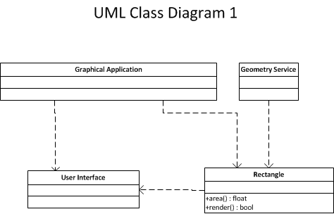
In this diagram we note that Rectangle has both an area() and a render() method. This means that the Rectangle class has a dependency on the User Interface module. If the UI module changes, then Rectangle will need to be modified and, depending on the programming language, recompiled. This means that the Geometry module now has a dependency on the User Interface module, even though there is no relationship between the two.
Using the Single responsibiilty principle, the right thing to do is to split out the render method and the area method into two different classes.
Let's look at a more realistic application, a customer order application that can handle orders coming from both the world wide web and a retail point of sale. Here's our first cut at designing a model. 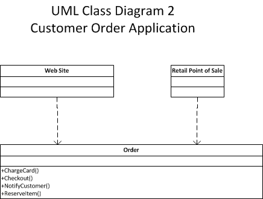
There are numerous problems associated with this model including:
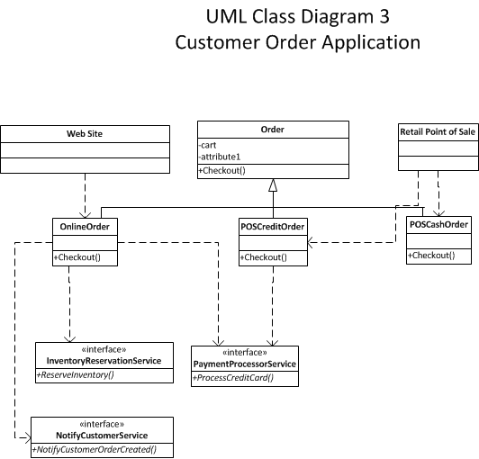
Note that when refactoring this model, we've split out the dependencies. We no longer have a single order class that has all the methods, instead, we declare Order as an abstract base class with three separate children that inherit. Each checkout method now calls different services to process each type of order. Each order implements a small interface that does one thing. Most importantly, changes to one type of order, for example, changing the Payment Processor for credit cards, doesn't affect any of the other order types.
class Item(object):
def __init__(self, SKU, quantity, price, weight=0,priceperkg=0):
self.SKU = SKU
self.quantity = quantity
self.price = price
self.weight=0
self.priceperkg = priceperkg
class Cart(object):
def __init__(self):
self.itemlist = []
def insertItem(self,item):
self.itemlist.append(item)
# Here we calculate the total value of the items in the shopping cart. Note that we use if/elif statements
# for each type of rule.
def totalAmount(self):
for item in itemlist:
if item.SKU.startswith('Each'):
total += item.quantity * price
elif item.SKU.startswith('Weight'):
total += item.quantity * item.weight * item.priceperkg
elif item.SKU.startswith('Special'):
total += item.quantity*price
if (item.quantity >= 2):
quantity +=1
# Many more rules may follow here...
return total
Here the problem becomes clear. The totalAmount method needs to be changed everytime a new business rule is either added or modified. This means that the Cart class must be modified, and that everything that depends upon the Cart class must also be tested and possibly changed as well. This is an example of fragile code. A better way is to change the design to accomodate the open/closed principle. While there are multiple approaches to designing a better system, we're going to use the concept of composition and a design pattern called the strategy pattern.
from abc import ABCMeta,abstractmethod
class Item(object):
def __init__(self, SKU, quantity, price, weight=0,priceperkg=0):
self.SKU = SKU
self.quantity = quantity
self.price = price
self.weight=0
self.priceperkg = priceperkg
# This is the pricing calculator interface, using the Python Abstract Base Class module.
class iPricingCalculator(metaclass = ABCMeta):
@abstractmethod
def calculatePrice(self,item):
pass
# This is the pricing rule interface.
class iPriceRule(metaclass = ABCMeta):
@abstractmethod
def isMatch(self,item):
pass
@abstractmethod
def CalculatePrice(self,item):
pass
# Every pricing rule inherits from the iPricingRule abstract base class and must implement
#the isMatch() and CalculatePrice() methods.
class eachPriceRule(iPriceRule):
def isMatch(self,item):
return True if item.SKU.startswith('EACH') else False
def CalculatePrice(self,item):
return item.quantity * item.price
class PerWeightPriceRule(iPriceRule):
def isMatch(self,item):
return True if item.SKU.startswith('WEIGHT') else False
def CalculatePrice(self,item):
return item.quantity * item.weight * item.priceperkg
class SpecialPriceRule(iPriceRule):
def isMatch(self,item):
return True if item.SKU.startswith('SPECIAL') else False
def CalculatePrice(self,item):
total = item.quantity*price
item.quantity +=1
return total
class PricingCalculator(iPricingCalculator):
def __init__(self):
self.pricingRules = []
self.pricingRules.append(eachPriceRule())
self.pricingRules.append(PerWeightPriceRule())
self.pricingRules.append(SpecialPriceRule())
# Now we can simply append a new pricing rule into the list.
def calculatePrice(self,item):
for rule in self.pricingRules:
if rule.ismatch(item):
return item.calculatePrice(item)
class Cart(object):
_PricingCalculator = PricingCalculator()
def __init__(self):
self.itemlist = []
def insertItem(self,item):
self.itemlist.append(item)
def totalAmount(self):
for item in self.itemlist:
total += self._PricingCalculator(item)
Let's analyze the above code. What we've done here is implement the strategy pattern. That is, we've decided that for each item, we'll use a particular Pricing Rule to calculate the price. In the PricingCalculator class, we can now simply add new rules as we need them, rather than having to add yet another elif statement to calculate the total amount. Note that when we add a new pricing rule, nothing else changes. This is a perfect example of the open/closed rule. Extend your code (by adding a new rule) rather than modifying your code (adding new elif's to the totalAmount method).
When do we apply thie open/closed principle to our code?
class Rectangle(object):
def __init__(self,height,width):
self.height = height
self.width = width
def area(self):
return self.height * self.width
class Square(Rectangle):
def __init__(self,height,width):
self.side= height
self.side = width
def area(self):
return self.side * self.side
rect1 = Rectangle(5,10)
rect2 = Square(5,10)
print (rect1.area())
print (rect2.area())
Note that the values for the areas are not the same from rect1 and rect2, even though they have the same input parameters. This code clearly breaks the Liskov Substitution Principle.
Let's see if we can fix this. Let's create a base class called Shape that both Rectangle and Square can inherit from. We'll put area calculation into the Shape class directly.
class Shape(object):
def calculateArea(self):
return self.height * self.width
class Rectangle(Shape):
def __init__(self,height,width):
self.height = height
self.width = width
class Square(Shape):
def __init__(self,*args):
self.height = args[0]
self.width = args[1] or args[0]
rect1 = Rectangle(5,10)
rect2 = Square(5,10)
print (rect1.calculateArea())
print (rect2.calculateArea())
A good way to tell whether LSP has been violated is to look at the following code example:
class Employee(object):
def SomeMethod(self):
if isinstance(self,Manager):
managerMethod()
elif isinstance(self,Director):
directorMethod()
If you are seeing a lot of code that has to check the instance type of the object, then you need to refactor the code with the LSP in mind.
from abc import ABCmeta,abstractmethod
class RobotMovement(metaclass=ABCmeta):
@abstractmethod
def roll(self):
pass
def walk(self):
pass
Consider that both types of robots, ones that roll on treads or wheels and those that walk upright now have to implement an interface that contains both types of methods, even though a car-like robot will never need to implement the walk method. The right way to do this is to implement separate interfaces for each movement type.
from abc import ABCmeta,abstractmethod
class RobotMovementWalk(metaclass=ABCmeta):
@abstractmethod
def walk(self):
pass
class RobotMovementRoll(metaclass=ABCmeta):
@abstractmethod
def roll(self):
pass
While the above example can be very simple, it is quite common to have third party classes with dozens of method calls. Taking code that implements these methods can be very difficult to transport to another application, especially if much of the code is dependent on environmental factors, such as O/S platform, programming language, hardware specifications and the like.
Many times, you will be unable to write your own interfaces and must use third party providers. One way around this is to implement a Facade design pattern. This pattern hides complex interfaces behind a more simple one. Here's an example
# Complex parts
class CPU:
def freeze(self): pass
def jump(self, position): pass
def execute(self): pass
class Memory:
def load(self, position, data): pass
class HardDrive:
def read(self, lba, size): pass
# Facade
class Computer:
def __init__(self):
self.cpu = CPU()
self.memory = Memory()
self.hard_drive = HardDrive()
def start_computer(self):
self.cpu.freeze()
self.memory.load(0, self.hard_drive.read(0, 1024))
self.cpu.jump(10)
self.cpu.execute()
# Client
if __name__ == '__main__':
facade = Computer()
facade.start_computer()
Note that in the above example, the user doesn't need to know about the low level details of starting a computer, such as loading memory, performign execute methods, etc. Simply call the start_computer method in the facade class and everything else is done behind the scenes.
The dependency inversion principle states, simply, that high level objects do not have to depend on low level implementations. Consider the role of a CEO of a major global corporation. His or her responsibilities may include strategic acquisitions of companies, dealing with the board and with shareholders and planning the overall company strategy. His tasks do not include working on the factory floor, or driving a truck, or calculating the annual tax return for the company. Similarly, high level objects, for example, an object that allows us to access a database, should not depend on a specific database implementation.
Let us consider some simple examples of Dependency Inversion.
import smtp
class NotifyOnError(object):
def __init__(self,mesg,msgMetaData):
self.mesg = mesg;
self.msgMetaData = msgMetaData
def transmitMesg(self):
EmailMsg = 'To: ' + self.msgMetaData['To'] + 'From: ' + self.msgMetaData['From'] + 'Subject: ' \
+ self.msgMetaData['Cc: '] + self.msgMetaData['CC'] + mesg
smtp.send(EmailMsg)
In the above example, We write have a class that will send an email message if some event has occurred. The NotifyOnError is tightly coupled with the sending of the message via e-mail. However, what if we want to send the message via an SMS text? Or some other method? I have to change my NotifyOnError class to support all of those possibilities. Using dependency inversion, however, we can make our code far more robust.
import smtp
import sms
class NotifyOnError(object):
def __init__(self,**kwargs):
self.transtype = kwargs['transtype']
self.kwargs = kwargs
def transmitMesg(self):
if self.transtype == 'SMTP':
SendEmail(self.kwargs)
elif self.transtype == 'SMS';
SendSMS(self.kwargs)
class SendEmail(object):
<class definition here>
class SendSMS(object):
<class definition here>
In the new example, we decouple the act of sending messages from the NotifyOnError class. Now, it is a simple matter to add a new transmission method as required. The high level class NotifyOnError no longer depends on the SMTP class.
What are design patterns? Design Patterns are a suite of “best practices” that can be applied to common problems when writing software. Most of these patterns were developed by trial and error over decades of software design and engineering. In 1994, the seminal book on design patterns Design Patterns – Elements of Reusable Object Oriented Software” written by Erich Gamma, Richard Helm, Ralph Johnson and John Vlissides, commonly known as the “gang of four”, was released. They advocated the following:
• Program to an interface, not an implementation. • Favor composition over inheritance.
They defined 23 different patterns comprised of three groupings, Creational, Structural and Behavorial patterns. We'll look at a small subset of these in this course.
Creational Patterns. These patterns allow programmers to create objects whlie hiding the logic of how the object is created. This type of pattern gives programmers flexibility in deciding how an object will be created.
A factory pattern is a type of a creational pattern.
Structural Patterns These patterns concern class and object composition. Inheritance is used to create interfaces and define ways to compose objects in order to create new functionality. A strategy pattern is a type of a structural pattern.
Behavorial Patterns These patterns are primarily concerned with communication between objects. Model-View-Controller (MVC) is a type of behavorial pattern.
The MVC pattern is used for implementing user interfaces. For example, if a web site wants to send data to a user, instead of handling all of the aspects of this in one class, we can split it out into three distinct parts
| The Model | Concerned with access to the data that the client is requesting. |
| The Controller | The software logic that retrieves the data and presents it. In other words, the logic that connects the model and the view together. |
| The View | Displays the model's data. |
Following is a graphical illustration of the MVC pattern.
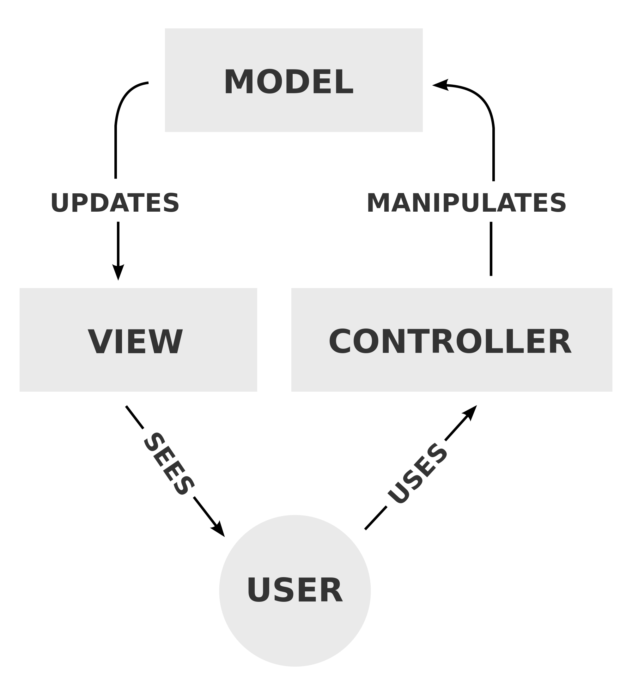
Here is an example of a class diagram that implements an MVC pattern allowing people to reference data from a Student.
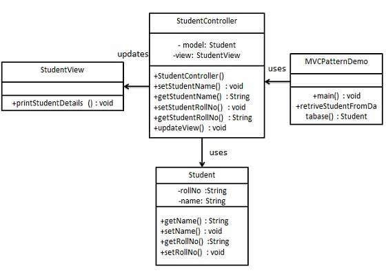
There are many applications that work on the concept of a subscriber model. For example, let's take an application that monitors weather. This application takes data from a number of sensors. The application observes each sensor and is notified whenever the sensor sends new data. We can implement this type of application using an Observer pattern.
The Observer pattern uses three actor classes. Subject, Observer and Client. Subject is an object having methods to attach and detach observers to a client object. We create an abstract class Observer and a concrete class Subject that extends class Observer.
The ObserverPatternDemo, our demo class, will use Subject and concrete class object to show observer pattern in action.
Here is an class diagram of an implementation of the observer pattern.
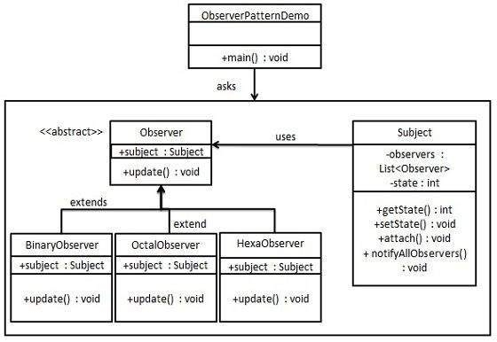
# %load examples/observer.py
# This is an example of the observer pattern.
class Subject:
def __init__(self):
self._observers = []
def attach(self, observer):
if not observer in self._observers:
self._observers.append(observer)
def detach(self, observer):
try:
self._observers.remove(observer)
except ValueError:
pass
def notify(self, modifier=None):
for observer in self._observers:
if modifier != observer:
observer.update(self)
# Example usage
class Data(Subject):
def __init__(self, name=''):
Subject.__init__(self)
self.name = name
self.data = 0
def setData(self, data):
self.data = data
self.notify()
def getData(self):
return self.data
class HexViewer:
def update(self, subject):
print( 'HexViewer: Subject %s has data 0x%x' % (subject.name, subject.getData()))
class DecimalViewer:
def update(self, subject):
print ('DecimalViewer: Subject %s has data %d' % (subject.name, subject.getData()))
# Example usage...
def main():
data1 = Data('Data 1')
data2 = Data('Data 2')
view1 = DecimalViewer()
view2 = HexViewer()
data1.attach(view1)
data1.attach(view2)
data2.attach(view2)
data2.attach(view1)
print ("Setting Data 1 = 10")
data1.setData(10)
print ("Setting Data 2 = 15")
data2.setData(15)
print ("Setting Data 1 = 3")
data1.setData(3)
print ("Setting Data 2 = 5")
data2.setData(5)
print ("Detach HexViewer from data1 and data2.")
data1.detach(view2)
data2.detach(view2)
print ("Setting Data 1 = 10")
data1.setData(10)
print ("Setting Data 2 = 15")
data2.setData(15)
if __name__ == '__main__':
main()
The singleton pattern is one of the simplest design patterns to create. This type of design pattern comes under creational pattern as this pattern provides one of the best ways to create an object. This pattern involves a single class which is responsible to create an object while making sure that only single object gets created. This class provides a way to access its only object which can be accessed directly without need to instantiate the object of the class.
Here is a class diagram of a singleton pattern.
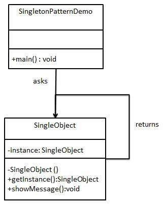
# %load examples/singleton.py
#!/usr/bin/python3
class OnlyOne:
class __OnlyOne:
def __init__(self, arg):
self.val = arg
def __str__(self):
return repr(self) + self.val
instance = None
def __init__(self, arg):
if not OnlyOne.instance:
OnlyOne.instance = OnlyOne.__OnlyOne(arg)
else:
OnlyOne.instance.val = arg
def __getattr__(self, name):
return getattr(self.instance, name)
x = OnlyOne("foo")
print (x)
y = OnlyOne("bar")
print (y)
The factory pattern is one of the most commonly used patterns in software design. This type of pattern is a creational pattern that allows the designer flexibility in what sort of objects to create.
For example, say we have a Shape class with three derived classes, Square, Rectangle, and Circle. Instead of having the programmer specifically instantiate circles, rectangles and squares, we can now create a new factory class, ShapeFactory and tell it what type of shape to create. It then returns the object type requested.
Here is a class diagram of this type of pattern:
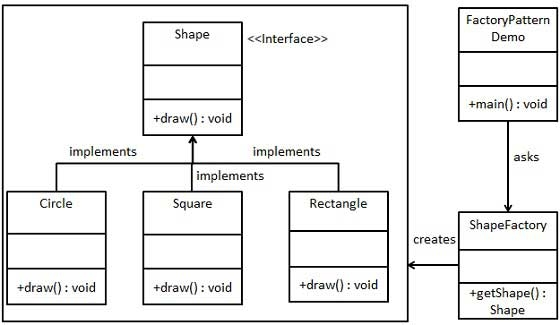
# %load examples/pizzafactory.py
# This shows another example of the factory design pattern.
class Pizza(object):
@staticmethod
def containsIngredient(ingredient):
return False
def getPrice(self):
return 0
class PizzaPepperoniandSausage(Pizza):
@staticmethod
def containsIngredients(ingredient):
return ingredient in ['sausage','pepperoni']
def getPrice(self):
return 9.75
class PizzaHamAndMushroom(Pizza):
@staticmethod
def containsIngredient(ingredient):
return ingredient in ["ham", "mushroom"]
def getPrice(self):
return 8.50
class PizzaHawaiian(Pizza):
@staticmethod
def containsIngredient(ingredient):
return ingredient in ["pineapple", "curry"]
def getPrice(self):
return 11.50
class PizzaFactory(object):
@staticmethod
def newPizza(ingredient):
# Find all the Pizza classes in the global namespace
pizzaClasses = [j for (i,j) in globals().items() if isinstance(j, type) and issubclass(j, Pizza)]
# Walk through the classes and build one based on the ingredients passed to it.
for pizzaClass in pizzaClasses:
if pizzaClass.containsIngredient(ingredient):
return pizzaClass()
# if research was unsuccessful, raise an error
raise ValueError('No pizza containing "%s".' % ingredient)
def main():
try:
myPizza = PizzaFactory().newPizza("ham")
print("%.2f" % myPizza.getPrice())
myPizza2 = PizzaFactory().newPizza("curry")
print("%.2f" % myPizza2.getPrice())
myPizza3 = PizzaFactory().newPizza("pepperoni")
print("%.2f" % myPizza3.getPrice())
except ValueError as e:
print (e)
if __name__ == "__main__":
main()
As we note from experience, it is possible to iterate over a number of different data types in Python, including lists, dictionaries, strings, tuples and other objects. For example:
mystring = 'Hello World'
for c in mystring:
print (c)
How is this implemented? How does the for loop know to go from the first to the last element of the list? In this case, the for statement calls the iter() function. This function returns a special object called an iterator. he iterator object defines a function called __next__() (Note that in Python 2 this function is just called next().) Using the built-in function next() and passing in the iterator object will invoke the next function to get the next element of the list (or whatever iterable object you pass in). For example, we can now re-write the above code as follows:
mystring = 'Hello World'
it = iter(mystring)
while (True):
try:
print (next(it))
except StopIteration:
break
Creating your own iterators is relatively straight forward. When creating an iterable object, override the iter method and supply your own. So, what is an iterable object? An iterable object is anything that can be defined as follows:
An iterable object is not quite the same as an iterator. An iterator is defined as follows:
a. Any object with a state that remembers where it is during iteration.
b. Any object with a next method defined that:
• returns the next value in the collection.
• Updates the state to point to the next value.
• Signals when it is finished iteration by raising the StopIteration exception.
elements = [1,2,3,4,5] # This is an iterable object
it = iter(elements) # it is the iterator object.
While the iterator and iterable object can be defined as two separate entities, in practice most programmers combine then like so:
Class IterableExample(object):
def iter(self):
return self
def next (self):
Generators are a special type of iterator. You can think of a generator as an iterable function. For example:
def my_generator():
l = [1,2,3,4,5]
for e in l:
yield e
x = my_generator()
while (1):
try:
num = next(x)
print (num)
except StopIteration:
print ('Finished')
break
Defining a name such as x = my_generator(), we can now call next(x) on the generator to give us the next element in the defined list l. Note the main difference between a generator and a normal function. Using the keyword yield automatically makes the function a generator. Unlike functions, generators maintain state between calls. If my_generator had return e rather than yield e, the only value that it would ever return is '1'. However, because we use the yield keyword, every call to the generator using it as an argument to the bultin next() function give us the next element of the list, so the output would be 1 2 3 4 5 rather than just 1 if we had a normal function. Additionally, since x is now iterable, we could also re-write the above code like this:
def my_generator():
l = [1,2,3,4,5]
for e in l:
yield e
x = my_generator()
for i in x:
print (i)
Why use a generator rather than define a list? The answer depends on the use case. For small ranges of values, a list is undoubtedly faster, however, as the range sizes increase, the amount of memory required to store all of the list values may become untenable. In this case, a generator makes much more sense as it only needs to use memory when the new value is created.
We can do even more with generators. Recall the concept of a list comprehension. Python also supports generator comprehensions. For example we can now re-write the above code even more simply like so:
my_generator = (n for n in range(1,6))
for i in my_generator:
print (i)
Note. In Python 3, the range function returns a generator rather than a list in Python 2. If you want a generator object in Python 2, use the built-in xrange() function. Also, once a generator has been exhausted, you cannot use it anymore and must define a new generator object. Attempts to use an exhausted generator will simply raise the StopIteration exception.
With generators, we're able to return values while keeping state in a function. With a coroutine, we can now pass values into a function while keeping state. For example:
def my_coroutine(s):
while True:
p = yield
print (pow(s,p))
x = my_coroutine(2)
# The next statement initializes the coroutine.
x.send(None)
x.send(2)
x.send(5)
Notice the difference in our coroutine function. Instead of issues a yield n command, which would return the value of n, we use a n = yield statement, which means that the value stored in the n variable is passed into the coroutine. In this case, the coroutine has two values passed in the value of s which is passed in as a normal function parameter when the coroutine is created, and another value which is passed in each time the send method of the coroutine object is called.
We always initialize the coroutine by calling the send method initially with the None parameter or by calling the next method. We can then call it normally with the send or next method.
A common use case with UNIX is to pipeline commands to filter data. In UNIX, many of the commands are designed to do one specific type of task, and to take the input by default from standard input and send output by default to standard output. We can chain these programs together to filter data to obtain only the specific results we define. We can also do the same thing in Python using generators. Let's take a look at a simple example:
# This generator will only give us the even numbers
def even_filter(nums):
for num in nums:
if num % 2 == 0:
yield num
# This generator will multiply each number by three.
def multiply_by_three(nums):
for num in nums:
yield num * 3
# This generator will convert the number to a string.
def convert_to_string(nums):
for num in nums:
yield 'The Number: %s' % num
nums = [1, 2, 3, 4, 5, 6, 7, 8, 9, 10]
# This statement is the heart of the program. Note that we pipeline the data.
# First, we filter out all the odd numbers, then we take the even numbers and multiply
# them by three, finally, we then convert each tripled number to a string and print it.
pipeline = convert_to_string(multiply_by_three(even_filter(nums)))
# Here we iterate over the convert_to_string generator (remember, generators are
# iterable objects) stored in the variable pipeline, which them calls the multiply_by_three
# generator, which calls the convert_to_string generator.
for num in pipeline:
print (num)
A classic use case for generator pipelines is application log processing. Here we see an example of this by writing a small application that processes log files from the Apache web server.
class LogProcessor(object):
def __init__(self, file):
self._file = file
self._filters = []
def add_filter(self, new_filter):
if callable(new_filter):
self._filters.append(new_filter)
def process(self):
# this is the pattern for creating a generator
# pipeline, we start with a generator then wrap
# each consecutive generator with the pipeline itself
pipeline = self._file
for new_filter in self._filters:
pipeline = new_filter(pipeline)
return pipeline
def parser(lines):
"""Split each line based on spaces and
yield the resulting list.
"""
for line in lines:
yield [part.strip('"[]') for part in line.split(' ')]
def mapper(lines):
"""Convert each line to a dict
"""
for line in lines:
tmp = {}
tmp['ip_address'] = line[0]
tmp['timestamp'] = line[1]
tmp['timezone'] = line[2]
tmp['method'] = line[3]
tmp['request'] = line[4]
tmp['version'] = line[5]
tmp['status'] = int(line[6])
tmp['size'] = int(line[7])
yield tmp
def status_filter(lines):
"""Filter out lines whose status
code is not 200
"""
for line in lines:
# is the status is not 200
# then the line is ignored
# and does not make it through
# the pipeline to the end
if line['status'] == 200:
yield line
def method_filter(lines):
"""Filter out lines whose method
is not 'GET'
"""
for line in lines:
# all lines with method not equal
# to 'get' are dropped
if line['method'].lower() == 'get':
yield line
def size_converter(lines):
"""Convert the size (in bytes)
into megabytes
"""
mb = 9.53674e-7
for line in lines:
line['size'] = line['size'] * mb
yield line
# setup the processor
log = open('./sample.log')
processor = LogProcessor(log)
# this is the order we want the functions to run
processor.add_filter(parser)
processor.add_filter(mapper)
processor.add_filter(status_filter)
processor.add_filter(method_filter)
processor.add_filter(size_converter)
# process() returns the generator pipeline
for line in processor.process():
# line with be a dict whose status is
# 200 and method is 'GET' and whose
# size is expressed in megabytes
print line
log.close()
We've seen how we can create pipelines with generators. We can do the same thing with coroutines. Here's an example:
# copipe.py
#
# A simple example showing how to hook up a pipeline with
# coroutines.
import time
# coroutine.py
#
# A decorator function that takes care of starting a coroutine
# automatically on call.
def coroutine(func):
def start(*args,**kwargs):
cr = func(*args,**kwargs)
cr.next()
return cr
return start
# A data source. This is not a coroutine, but it sends
# data into one (target)
def follow(thefile, target):
thefile.seek(0,2) # Go to the end of the file
while True:
line = thefile.readline()
if not line:
time.sleep(0.1) # Sleep briefly
continue
target.send(line)
# A filter.
@coroutine
def grep(pattern,target):
while True:
line = (yield) # Receive a line
if pattern in line:
target.send(line) # Send to next stage
# A sink. A coroutine that receives data
@coroutine
def printer():
while True:
line = (yield)
print (line,)
# Example use
if __name__ == '__main__':
f = open("access-log")
follow(f,
grep('python',
printer()))
Let's examine this program in some detail. Following the file open, we call the follow function and pass in the file and our first coroutine, grep. The grep coroutine will also take as an argument, the second coroutine in the pipeline.
The first coroutine takes in, as the yield parameter, each line of the file and checks to see if the supplied pattern is in the line. If so, it calls the next coroutine, in this case printer() and passes the line with the pattern into it via the send method of the coroutine. Finally, the printer function prints the line out to the console.
Additionally, we can call the close method on a coroutine to close it as well as the throw method to raise an exception inside the coroutine.
Python allows the concept of nested functions. For example:
def print_msg(msg):
# This is the outer enclosing function
def printer():
# This is the nested function
print(msg)
printer()
# We execute the function
# Output: Hello
print_msg("Hello")
In this example, we have defined a function printer() inside another function print_msg(). Note that the nested function has access to the variables, in this case msg of the outer function print_msg.
The above example isn't really terribly useful, however. What if, instead of simply printing the message, the outer function returned an instance of the inner function?
def print_msg(msg):
# This is the outer enclosing function
def printer():
# This is the nested function
print(msg)
return printer # this got changed
# Now let's try calling this function.
# Output: Hello
another = print_msg("Hello")
another()
# A second instance of the closure.
second = print_msg('Goodbye')
second()
This is a lot more interesting. Now, we can create multiple instances of the print_msg function and pass in any arbitrary string to print. Note that the outer function returns an instance of the inner function, which we can then run as we need to.
What is the definition of a closure?
The criteria that must be met to create closure in Python are summarized in the following points.
- We must have a nested function (function inside a function).
- The nested function must refer to a value defined in the enclosing function.
- The enclosing function must return the nested function.So what are closures good for?
Closures can avoid the use of global values and provides some form of data hiding. It can also provide an object oriented solution to the problem.
When there are few methods (one method in most cases) to be implemented in a class, closures can provide an alternate and more elegant solutions. But when the number of attributes and methods get larger, better implement a class.
We can use the concept of closures to implement a technique known as currying. Currying is the ability to transform a single function that takes many arguments into a string of functions that takes a significantly smaller amount of arguments. Let's see an example of this:
import math
def quad(a):
def calculate_quad(b,c):
discriminant = b ** 2 - 4 * a * c
if discriminant < 0:
return ((None))
elif discriminant == 0:
return (-b + math.sqrt(discriminant) / 2 * a)
else:
return (-b + math.sqrt(discriminant) / (2 * a),-b - discriminant/ (2 * a))
return calculate_quad
# q1 is an instance of calculate_quad with the value of a predefined to 5
# q2 is an instance of calculate_quad with the value of a predefined to 6.
q1 = quad(5)
q2 = quad(6)
# Now let's call the first instance of calculate_quad and pass the b and c parameters 2 and 3 to it.
print (q1(2,3))
# Call the second instance of calculate_quad and pass the b and c parametesr 2 and 3 to it.
print (q2(2,3))
The above example is a demonstration of currying. Here we want to calculate the quadratic formula. Note that we have three parameters, a,b, and c. The outer function gets the value of parameter 'a' passed to it.
from functools import partial
import math
def calculate_quad(a,b,c):
discriminant = b ** 2 - 4 * a * c
if discriminant < 0:
return ((None))
elif discriminant == 0:
return (-b + math.sqrt(discriminant) / 2 * a)
else:
return (-b + math.sqrt(discriminant) / (2 * a),-b - discriminant/ (2 * a))
q1 = partial(calculate_quad,a=5)
q2 = partial(calculate_quad,a=6)
print (q1(b=2,c=3))
We can also do currying using the partial() method from the Python functools library. Here we define q1 and q2 using the partial method which returns the callable calculate_quad function with the value of 'a' defined. We can then call q1 with the b and c parameters as needed.
We saw in our section on coroutines that we had an odd statement @coroutine in some of the code examples. This is known as a decorator. It is really just syntactical sugar for a type of closure. Consider that every time we use a new coroutine instance, we have to call the send or next function to initialize it. Repeating this code everytime we use the coroutine is wasteful and redundant. We use the concept of a decorator to eliminate this redundancy.
def coroutine(func):
def start(*args,**kwargs):
cr = func(*args,**kwargs)
cr.next()
return cr
return start
Note here that the coroutine decorator function takes the actual coroutine function name as its argument, func. It returns the actual coroutine with any arguments and keyword arguments included. Notice, however, that before it returns, it calls the next method of that coroutine to initialize it. This is the real purpose of this particular decorator, to obviate the need to call the next method manually.
Once we've defined our coroutine decorator, we can now use it anytime we want to define a real coroutine.
def coroutine(func):
def start(*args,**kwargs):
cr = func(*args,**kwargs)
cr.send(None)
return cr
return start
@coroutine
def mycoroutine():
while True:
val = (yield)
print ('val = ',val)
myc = mycoroutine()
myc.send('foo')
myc.send('bar')
In this example, the coroutine decorator will return the instance of mycoroutine, but will first call the send method with the None parameter is is required when first calling a coroutine.
Let's consider the following problem. You have an object called Project which describes an IT project that your company is considering. This object is part of an application that manages projects for your company. Here's what this project object might look like...
One potential problem is that it is possible to initialize this Project class with a negative amount for the budget. There is nowhere in this definition that checks to make sure that the amount passed to the budget variable is valid or reasonable.
One possible solution is to add some code to the Project class's __init__ () method.
class Project (object):
def __init__(self,title, department, budget, manager,amountSpent):
self.title = title
self.department = department
if budget < 0:
raise ValueError('Error: Budget amount %d is a negative value” % (budget))
self.budget = budget
self.manager = manager
self.amountSpent = amountSpent
def amountOfBudgetLeft:
return self.budget – self.amountLeft
However, this is not really a good solution. What happens if the application developer using your class sets the budget manually to an invalid value? The __init__() method only runs when the object is instantiated.
myproj = Project('MyProject','Engineering',100000.00,'John Smith',0)
myproj.budget = -1000000.00 # Oops!
Unlike other languages, such as Java or C++, there is no way to enforce encapsulatioh of data in an object. That is, there is no equivalent of the private, protected or public keywords in Python. This is a design features of the language. Yet, how do we prevent this problem of possibly invalid values being inserted into a class attribute? The first way to do this is with properties. Let's take a look at an example.
class Project (object):
def __init__(self,title, department, budget, manager,amountSpent):
self.title = title
self.department = department
if budget < 0:
raise ValueError('Error: Budget amount %d is a negative value” % (budget))
self.budget = budget
self.manager = manager
self.amountSpent = amountSpent
def amountOfBudgetLeft:
return self.budget – self.amountLeft
@property
def budget(self):
return self.budget
@budget.setter
def budget(self,amountToSet):
if amountToSet < 0:
raise ValueError(“Error: Budget amount %d is a negative value” %(budget))
self.budget = amountToSet
Note the two new methods, both called budget(). Here we use decorators to define properties. The first decorator simply replaces the lookup to the class attribute with a method. The second one, however, is the interesting concept. Here when setting the budget value in the object, instead of directly setting it as we saw in the earlier example, Python now calls the setter property which will test the attribute for an invalid value and throw an exception if the value is invalid.
class Project (object):
def __init__(self,title, department, budget, manager,amountSpent):
self.title = title
self.department = department
if budget < 0:
raise ValueError('Error: Budget amount %d is a negative value' % (budget))
else:
self.budget = budget
self.manager = manager
self.amountSpent = amountSpent
def amountOfBudgetLeft(self):
return self.budget - self.amountSpent
@property
def budget(self):
return self.budget
@budget.setter
def budget(self,amountToSet):
if amountToSet < 0:
raise ValueError('Error: Budget amount %d is a negative value' %(budget))
self.budget = amountToSet
myproj = Project('MyProject','Engineering',100000.00,'John Smith',0)
myproj.budget = -1000000.00 # Catches the bad value.
While properties are a very nice way to simplify access to attributes in Python classes, they have a drawback. If you have multiple fields that you want clients to access (and possibly do some validation on setters) you have to write a property for each field. If you have multiple fields where you want to test whether the setting value is negative and throw an error, you have to re-write that property for each attribute. This can result in a lot of duplicated code. For example.
class ExampleOfRedundantPropertiesCode(object):
def __init__(self,a,b):
self.a= a
self.b = b
# Suppose we want to make sure we don't allow negative values when setting a and b. Here's
# how we do it with properties.
@property
def a(self):
return a.self
@a.setter
def a(self,value):
if value < 0:
raise ValueError(“Error: Can't set attribute to a negative value”)
self.a = value
# Notice how we have to duplicate this code from above for attribute b.
@property
def b(self):
return b.self
@b.setter
def b(self,value):
if value < 0:
raise ValueError(“Error: Can't set attribute to a negative value”)
self.b = value
Solving this problem is where descriptors fit in. A descriptor is an object that has at least one of three methods defined:
| Method name | Description |
|---|---|
| __get__ | Allows applications to retrieve attributes from a class. |
| __set__ | Allows applications to set attributes in a class. |
| __delete__ | Allows applications to delete an attribute in a class. |
Let's rewrite our Project class using a descriptor object.
from weakref import WeakKeyDictionary
class TestForNegativeValuesDescriptor(object):
def __init__(self,default):
self.default = default
self.data = WeakKeyDictionary()
def __get__(self,instance,owner):
return self.data.get(instance,self.default)
def __set__(self,instance,value):
if value < 0:
raise ValueError('Error: Cannot set attribute to a negative value')
self.data[instance] = value
class Project(object):
# Here we tie the budget attribute to the descriptor. We give it a default value (in this
# case 0).
budget = TestForNegativeValuesDescriptor(0)
budget2 = TestForNegativeValuesDescriptor(0)
def __init__(self,title, department, budget, manager,amountSpent):
self.title = title
self.department = department
# Now, everytime we try to get or set this attribute, it calls the correct method defined in the
# descriptor.
self.budget = budget
self.manager = manager
self.amountSpent = amountSpent
def amountOfBudgetLeft(self):
# Calls the descriptor __get__ method.
return self.budget - self.amountLeft
myProject = Project('Database Migration','Information Technology',10000.00,'Joe Green',0)
budget = myProject.budget # Calls the descriptors __get__ method here.
print (budget)
Let's go through this code step by step. We declare the descriptor (class TestForNegativeValues) and give it two attributes, a default value and a dictionary of weak references.
What is a weak reference? A weak reference is a reference to an object that will not count when the Python garbage collector checks to see if the object reference count is zero. We know that if no references exist, the garbage collector will reap the object and return the memory to the heap. A weak reference will point to the object, but if no strong references exist, the object will be garbage collected despite the existence of a weak reference to that object.
Why do this? Well, it's because we don't want the descriptor to be able to hold on to the object if it isn't needed anymore. The descriptor is really a helper class to the object and if the object loses all its references we don't want the helper class making the Python VM hang onto the object that it's working with. If the descriptor did force the VM to hang on to the object, this would cause a memory leak.
Why are we declaring a dictionary of weak references? It's because each instance of Project share the same descriptor. This means that the descriptor needs to keep track of which instance is which, and, of course, the best way to do this is by using a dictionary.
Note that we're declaring and defining the budget attribute as a class attribute rather than an instance attribute by declaring outside of the __init__ method. If we don't do this, then Python won't call the __get__ and __set__ methods of the descriptor when using it outside the class definition.
Now, when we get or set the attribute, Python will call the __get__ and __set__ methods defined in the descriptor class. This means that we can now re-use the class for every attribute that we want to be handled by the descriptor. No more redundant code!
When we call the get method on the budget attribute by doing something like print(myProject.budget) or setting it by calling myProject.budget = 2000, we pass two parameters to the methods. For the __get__ method, we pass the instance (i.e. the reference to the left of the . in the calling statement.) to the myProject.__get__(instance,owner) method.
For example for myProject.budget, the instance is stored in the myProject variable. We also pass the type of the myProject object to the get method as the second parameter. The get method will return either the value stored in the Weakhash dictionary or a default value (set when we first define the budget attribute in the Project class).
For the __set__ method we now call m.budget.__set__(instance,value) and again pass the object reference to the left of the period, i.e. the m in m.budget as the instance parameter and the value which is defined to the right of the assignment = operator.
Remember, the descriptor object is the same one for every instance of the Project class, so the descriptor uses the instance,value combination as the key/value pair of the Weakhash data structure.
One of the most common use cases for writing applications is to allow multiple computers to be able to exchange information with each other over a network. This type of system architecture is called a client/server architecture. We can do this in Python by the use of the Socket API. The following diagram shows a simple high level architecture of a client server system.
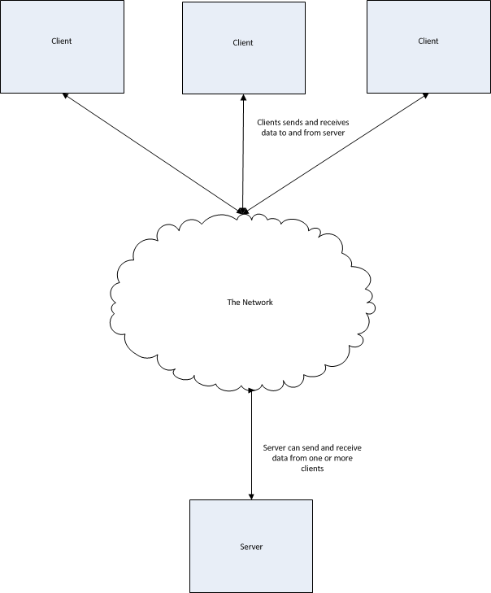
The socket API for Python is relatively straight-forward and follows standard pre-defined steps.
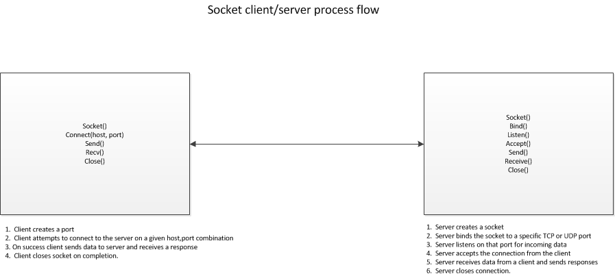
As we can see from the diagram, the process of creating a client server application follows two distinct patterns, one on the client, and the other on the server. The client starts by creating a socket object using the socket library call like so:
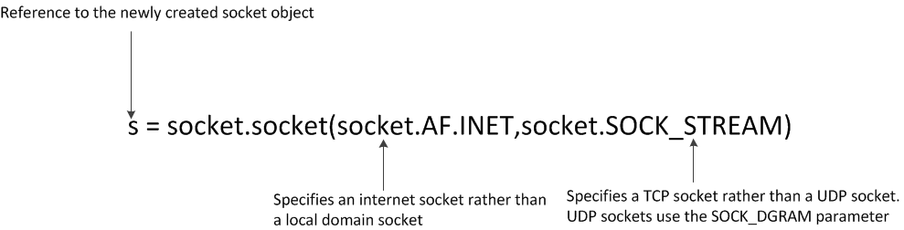
Once the connection is successful, the client can now send data to and receive data from the server.
Here is an example of a (very simple) client side of a client/server application.
import socket
s=socket.socket(socket.AF_INET,socket.SOCK_STREAM)
s.connect(“localhost”,8080)
# Here we're receiving a maximum 1K of data from the server.
print(s.recv(1024))
s.send(“Received”)
s.close()
Now let's look at the server. Creating a server is a bit more complicated, so let's walk through this step by step. Step 1. Create the socket. This is effectively the same process as the client. Step 2. Bind the socket to the port. We do this by using the bind library call. This call ties the socket object to the specific port. Step 3. Listen on the socket. We use the listen() library routine to do this. This tells the server that it will be listening on that port for client requests.
Step 4. Accept requests from the client(s). We use the accept() system call to accept the requests which we can then process according to our needs. Let's take a look at a code snippet.
import socket
# Create the socket as a TCP internet socket.
s=socket.socket(socket.AF_INET,socket.SOCK_STREAM)
# This is a helper method that returns the local hostName of computer that we’re running on.
hostName = socket.gethostname()
# This is the port we will be listening on.
Port=8080
# Bind the hostname/port to the the socket object s.
s.bind(hostName,port)
# Listen on the socket. The supplied parameter is the number of queued requests from clients
# that are allowed before the server refuses to accept new connections. Note that in 3.5
# this parameter is now optional.
s.listen(5)
# Loop forever accepting client connections and doing some processing on it.
while True:
# c is the data received from the client. Addr is a list containing, among other things, the
# IP address of the client that sent the request.
c,addr = s.accept()
print(“Connection accepted from “ + str(addr[1])
c.send(“Server connected”)
print(c.recv(1024)
# Close the server socket. Note that in this code snippet, this statement never gets reached. It's
# a good idea to have some sort of exit value that the server understands and will quit if that value
# is sent by the client.
c.close()
Let us consider the following problem. You have a client application that attempts to connect to a server. However, the server is, for some reason, unavailable, it would be desirable to allow the client application to either do some other action and wait for the connect operation to succeed or cancel the connect operation altogether. However, at this point, this isn't possible. That is because by default, all sockets are created as blocking sockets. This means that when the connect method is called, the client application will block. It also means that the client will not regain control until after the connect operation either succeeds or times out.
In many applications, this isn't desirable behavior. This behavior is also true for other socket operations such as the send and receive calls. In order to fix this, we can set the socket into non-blocking mode. This means that all socket calls will return immediately with success or an error rather than waiting until completion. With python we can set non-blocking mode in one of two ways.
sock.setblocking(False)
sock.settimeout(0)
Executing either statement will put a socket into non-blocking mode.
It is important when writing client/server applications that the code be robust enough to handle the unexpected errors that can occur when network communication is disrupted or otherwise fails.
We can achieve this by wrapping the socket calls in a try/except/finally block as needed. The socket library has a socket.error object that can be caught and displayed. Here is an example of client code that uses this method.
import socket
s = socket.socket(socket.AF_INET,socket.SOCK_STREAM)
try:
s.connect(“localhost,8080)
except socket.error, e:
if e.args[0] == errno.ECONNREFUSED:
raise SystemExit(“Connection was refused by the server”)
else:
raise SystemExit(“Unknown socket connection error”)
finally:
if s != None:
s.close()
Note that we wrap the socket connect method in a try/except/finally block. The socket library will throw a socket.error exception if there is a problem. The e object will tell us what the error was so that we can notify the user and/or log the problem.
In general it is suggested to wrap all socket methods such as connect, send, recv, accept, and others with try/except/finally blocks.
It's important to understand that, by themselves, bytes have no intrinsic meaning. Any context to the meaning of a stream of bytes being send or received is only applied when an agreement of some sort is reached between the sender and the receiver of that byte stream.
The first attempt to come to a global consensus of what information is contained in a byte stream was the creation of the American Standard Code for Information Interchange (ASCII). ASCII was the first attempt to assign some sort of value to an eight bit byte. For example, ASCII defines the English capital 'A' letter to be the value of 0x41 (hexadecimal value 41). So, when anyone sends an 0x41 value over a network, if the receiver is expecting some sort of ASCII value, it can lookup 0x41 in the ASCII table of values and map that hexadecimal value to the letter.
The first edition of the ASCII table was published in 1963 and last received an update in 1986. Other, vendor-proprietary, standards such as EBCDIC (created by IBM) were devised around the same time. However, ASCII, being vendor-neutral eventually prevailed as the de-facto standard for assigning meaning to bytes.
ASCII, however, has limitations. The standard only defines meaning for 128 entries, While this is sufficient for the Latin alphabet, and, in particular, the English language, it is woefully inadequate for even non-English languages such as French, Spanish, Italian or German, even though they are all using the Latin alphabet character set.
Accent marks, the use of the β in German to indicate a double-s ('ss') and other special characters made it difficult to represent other language character sets on a computer system.
The ASCII table, has space for up to 256 characters of which ASCII only used 128. Therefore, an extension to this, defined by the International Standards Organization added an extended set of characters to the table. This standard was called ISO-8859-1.
Finally, Microsoft Corporation took the final 27 spaces and added symbols to produce the CP1252 standard to allow the ability to assign byte meanings to punctuation marks such as single and double quotes. However, this now fills up the 256 possible characters in the single byte character set (As we know, a single byte can store a range of values from 0 to 255). This does not even begin to address the needs of various languages, such as Mandarin, which may have up to 20,000 different symbols in its alphabet, not to mention supporting languages such as Hindi, Arabic, Russian, etc.
Many attempts were made to create new standards, using both single and double byte values to extend the number of characters that we can assign meaning to, however, none of them were successful, and in truth, none of them addressed the fundamental problem of allowing enough of a range to be able to adequately support the sheer number of symbols that were required for a truly global multi-language standard.
The first unicode standard was conceived in 1987 by employees working at Xerox Corporation and Apple Computer as a two byte (16 bit) standard to cover character sets for modern languages. This was extended with the publication of the Unicode 2.0 standard in 1996 to allow support for such dead languages as ancient Egyptian with the Hieroglyph character sets as well as obsolete Kanji characters for Japanese and Chinese.
Some of the main differences between Unicode and ASCII include:
Unicode supports ASCII directly as a subset of the values contained in the first plane, which is called Plane 0 or the Basic Multilingual Plane. The first block of this plane, starting at value 0, is the ASCII set, so, for example 0x41 in ASCII is the value 'A'. The equivalent would be U+41, which is the Unicode representation of 'A'.
There are many different ways to encode these code points as a byte stream, the only one that we will mention here is UTF-8. This is far and away the most common and popular way to encode Unicode values as bytes.
This is also the default encoding standard when calling python encode() and decode() methods on byte strings and Unicode strings in Python.
The details of how the UTF-8 encoding scheme works is beyond the scope of this document. You may refer to the Wikipedia page at https://en.wikipedia.org/wiki/UTF-8 for details on how UTF-8 encoding is implemented.
While this may be academically interesting, why do we as Python programmers care about this? It turns out that Unicode support is the single biggest difference between Python 2 and Python 3. Let's examine how this works in Python 2.
Using the iPython shell, we can do the following:
In [1]: my_string = "A python string" In [2]: type(my_string) Out[2]: str
In [10]: my_unicode_string = u"\u0041\u0020\u0070\u0079\u0074\u0068\u006f\u006e\u0020\u0073\u0074\u0072\u0069\u006e\u0067"
In [13]: type (my_unicode_string) Out[13]: unicode
Now, notice what happens when we add a non-ascii character to the string, in this case a random cyrillic letter (Used in slavic languages such as Russian).
Note that str refers to a byte string, while unicode refers to a unicode string. Let's run the encode() and decode() methods on the strings.
In [1]: my_unicode_string = u"\u0041\u0020\u0070\u0079\u0074\u0068\u006f\u006e\u0020\u0073\u0074\u0072\u0069\u006e\u0067\u0400" <-- Last character isn't ASCII
In [7]: my_utf8 = my_unicode_string.encode('utf-8') In [9]: my_utf8 Out[9]: 'A python string\xd0\x80'
In [11]: my_utf8.decode('utf-8') Out[11]: u'A python string\u0400'
So, we see that we can transform a unicode string into a stream of bytes using the encode() method (And supplying the UTF-8 encoding scheme as a parameter). We can also decode the byte string back into Unicode by using the decode() method on the byte string.
However, we need to pass the correct encoding method to the encode() and decode() methods. Passing the wrong coding scheme will give you runtime errors such as the following:
In [15]: my_unicode_string Out[15]: u'A python string\u0400'
In [16]: my_unicode_string.encode('ascii')
UnicodeEncodeError Traceback (most recent call last)
UnicodeEncodeError: 'ascii' codec can't encode character u'\u0400' in position 15: ordinal not in range(128)
Here we see that if we specify the ASCII coding scheme to a non-ASCII string, such as the one we provide with the non-ASCII compatible cyrillic character at the end, Python will raise a UnicodeEncodeError exception.
Note that the encoding (or decoding) will also fail if the byte sequences are junk or corrupted. This is a good feature because Python will fail rather than try and provide invalid output from an encode or decode method. Therefore Python won't accept corrupted input as valid.
Alternatively rather than raising an exception, we can pass a second parameter to the encode and decode functions. Some values for this second parameter are as follows:
| Parameter Value | Parameter Description |
|---|---|
| strict | The default value. Will raise an exception if it can't decode the value. |
| replace | Will return a “?” for every character that can't be decoded. For example: “A python string?” |
| xmlcharrefreplace | Will return an HTML/XML character entity reference, so /u0400 become Ѐ. (0x400 = 1024 decimal). |
| Ignore | Simply ignore and don't print out the value |
Now we come to the crux of the problem with the Unicode coding scheme in Python 2. The python 2 distribution contains a file located in /usr/local/python2.x/ called site.py (This is on Unix systems, check your reference documentation for the location of this file on Microsoft Windows based systems). When Python was first being created, the designers decided to set the default encoding scheme to 'ASCII'. We can see this as follows:
In [1]: import sys
In [2]: sys.getdefaultencoding() Out[2]: 'ascii'
When Python 2 sees some code that looks like the following:
In [2]: string1 = u"Hello" string2 = "World"
In [8]: type(string2) Out[8]: str <-- Here string2 is a byte string
In [9]: type(string2.decode()) Out[9]: unicode <-- Here string2 has been coerced to a unicode string
In [4]: print string1 + " " + string2 Hello World
In [12]: print type(string1 + " " + string2)
Python 2 will try to implicitly coerce the byte string (In this case string2) to a Unicode string. Because we have seen that the default encoding scheme is 'ASCII', it will attempt to use this coding scheme to encode or decode the byte string. This works when, in fact, the byte string is accepted to be ASCII by the creator, however, this will fail if in fact, a non-ASCII character is contained in the byte string. This is the cause of the Unicode{Encode|Decode}Exception. One of the most common types of programming patterns where this is encountered is in network client/server applications.
To be fair to the designers, in the year 2000 when the language was being designed, ASCII was the 'safe' choice. However, with the explosion of applications using non-ASCII unicode characters, this is no longer true.
Short answer: No. Longer answer: Yes, you can, but it is a really, really, bad idea.
Why not? There is a workaround which will allow Python 2 programmers to set the default encoding value, however doing this create severe side effects in which, effectively, the cure becomes worse than the disease.
Problem number 1. Other programs besides yours may depend on this value being set to 'ascii'. The site.py is loaded once for the environment. The setdefaultencoding() method is not available by default. Creating this method in your program and invoking it will affect not only your program but also any third party programs, such as libraries which may depend on that value. You may well find that the program will work on your development system,but when rolling it out into production many other things will break which makes your application unviable.
Problem Number 2. Basic collections such as dictionaries may break when doing container lookups. This is because the hash values of a key that contains only ASCII values and one that contains non-ASCII values won't be the same due to the fact that the in operator doesn't automatically coerce type, so the in operator will not return the expected value whereas the '==' operator which will do the implicit coversion will return the expected value.
Python 3 completely re-does the concept of byte and unicode strings. Let's take a look.
foo = "Hello World\u0400"
print (type(foo))
bar = b"Hello World\u400"
print(type(bar))
Python 3 has now completely redefined the 'str' class. Python 3 treats 'str' as Unicode whereas Python 2 treated 'str' as a byte string.
Note that specifying the 'b' prefix before a string indicates to Python 3 that this is a byte string. Python 3 now has a specific built in class for byte strings.
Additionally Python3 will no longer do implicit type conversion for you. You must now explicitly covert byte strings to unicode and vice versa using the decode and encode methods. Because of this change, the chances of getting a UnicodeEncodeException or UnicodeDecodeException runtime error are substantially reduced. The penalty, however, is that you must now explicitly encode and decode your strings in your program.
Let's see an example of this.
# No implicit type conversion here.
helloworld = "Hello" + b" World"
# Must explicitly convert this.
helloworld = "Hello " + b"World".decode('UTF-8')
print (helloworld)
A summary of the python 2 vs python 3 differences with unicode can be compiled as follows:
| The str class | In Python 2 str is a byte string, in Python 3 it is a unicode string |
| The byte builtin class | Unique to Python 3 |
| Implicit type conversion | Yes in Python 2, no in Python 3 |
So, how do we actually use this in our applications? The best way to do this is to explicitly do the conversion to unicode immediately upon receiving the byte string. Use unicode strings internally, and then convert back to bytes when sending the data back. This can thought of as a “unicode sandwich”. The following diagram illustrates this.
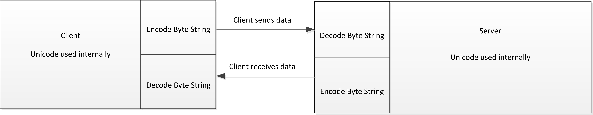
Finally, it's important, when designing your application to keep the following ideas in mind.
There is no way to look at a stream of bytes and infer what the encoding scheme. You have two choices, A. Take a guess B. Have someone tell you.
Sometimes you get a bad steer. I.e. the encoding standard you choose is wrong, even if you've been told it's correct.
There are three design pro-tips that you should consider.
There are many types of applications where you as the programmer would like to take advantages of the multi-core aspect of your CPU. Generally there are two ways to achieve this, Multiprocessing and Multithreading. Python, however, does not allow you to use Multithreading in relation to CPU's. This is because the reference implementation of Python, CPython, contains something called the Global Interpreter Lock or GIL. This means that you are restricted to a single thread of execution in your Python applications. Therefore, if we want to take advantage of the fact that our CPU has multiple cores, we must use Python's multiprocessing module.
There are many types of applications that benefit from a situation where we need to start more than one process in order to achieve maximum effectiveness. Let's consider the example of a travel agency application. In this application, a customer wishes to travel from London to New York and wants to find the best airline fare. The application might query three airlines: British Airways, Delta Airlines and United Airlines. Consider the following architecture:
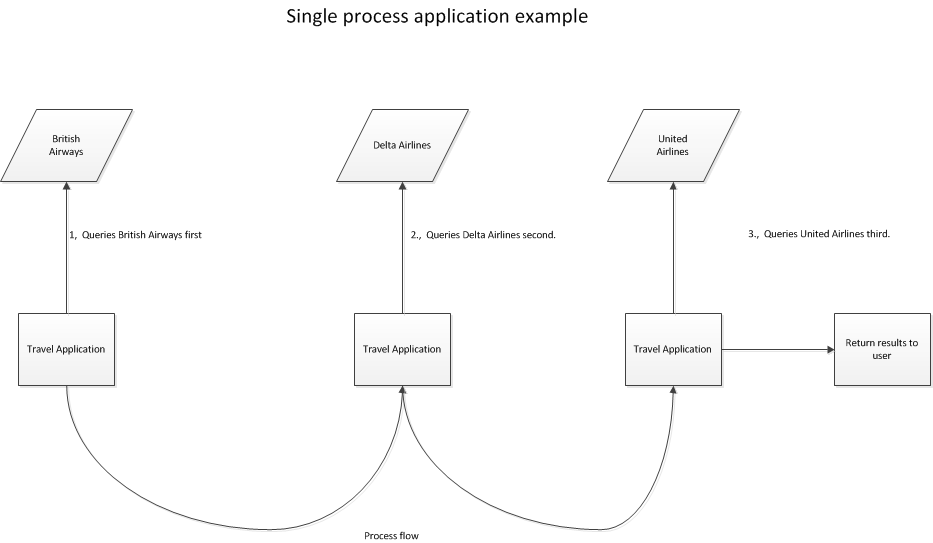
In the previous graphic, what happens if there is a problem in getting data from British Airways? For example what if the network connection is down? In this architecture we would have to wait until the BA site timed out before we could query Delta Airlines. What we'd rather do is re-design our travel application so that it would query each site concurrently and return the results to the customer.
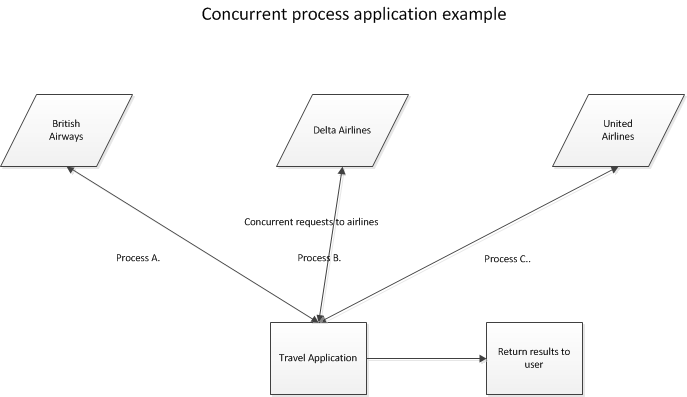
Using concurrent processing, we reimage our architecture as shown above. Now, each query to an airline is a separate process that does not depend on any of the others completing. The application can return results as soon as any of the processes completes.
Let us now look at a very simple example of multiprocessing.
import multiprocessing as mp
# This is the worker function that will run in its own process.
def worker_process():
print ("I am a worker function.")
return
# Here, we create a list of the jobs we'll run, in this case five jobs, and append
# the process ID to the jobs list. We then start each process using the start()
# method from the multiprocess module. We need to wrap the main loop with the __name__
# check, otherwise, each child process will recursively run the same code.
if __name__ == '__main__':
jobs = []
for i in range(5):
p=mp.Process(target=worker_process)
jobs.append(p)
p.start()
Let's go a little further. Let's have the worker function print out it's job ID. We'll have to pass this value into the function itself.
import multiprocessing as mp
def worker_process(process_id):
print ("I am worker function: " + process_id)
return
# Note here that we use the 'args' parameter to pass arguments to our worker_process.
if __name__ == '__main__':
jobs = []
for job_id in range (5):
p = mp.Process(target=worker_process, args = (str(job_id)))
jobs.append(p)
p.start()
Note that the output indicates that we don't control which process starts and ends first. If this is necessary, we can force this by running a join() method from the multiprocessing module to force the main process to wait until the child is completed (The name of this method might have been better called wait(), however, the authors of the module wanted to use the same syntax as is used in multithreading.
import multiprocessing as mp
def worker_process(process_id):
print ("I am worker function: " + process_id)
return
# Note here that we use the join() parameter to force the main process to wait until all children complete
# before continuing on.,
if __name__ == '__main__':
jobs = []
for job_id in range (5):
p = mp.Process(target=worker_process, args = (str(job_id)))
jobs.append(p)
p.start()
p.join()
print ("All processes completed")
A common use case for multiprocessing is to compute values over a collection of data, such as a list. Rather than doing each list value one at a time, we can use multiprocessing to compute each list value simultaneously. Here's an example.
import multiprocessing as mp
source_list = [1,2,3,4,5]
squares_list = []
jobs = []
pipe_list = []
# Here, our squares function will take in a number to square, and the sending end of the
# pipe which will return our squared valuie.
def squares(n,send_pipe):
send_pipe.send(n*n)
if __name__ == '__main__':
# Let's create our pipe. The Pipe() function returns both the sending and the receiving side of the
# pipe which we'll store in our own variables.
send_pipe,receive_pipe = mp.Pipe()
# Now, let's square each number in the list. We'll call the squares function and pass the number to
# square as well as the sending side of the pipe.
for num in source_list:
p = mp.Process(target=squares, args=(num,send_pipe))
jobs.append(p)
# Here, we have a list of the receive ends of the pipe for each process.
pipe_list.append(receive_pipe)
p.start()
# Let's wait for each process to finish in order.
for job in jobs:
job.join()
# Hopefully, the values in the pipe_list correspond to the squared numbers send to the square() function.
# so we'll do a list comprehension and build our new results_list with the values in the pipe_list.
result_list = [x.recv() for x in pipe_list]
print (result_list)
Here we note that we used the Pipe functionality of the multiprocessing module to allow us to read the return variables for each process. This is, however, not the only way that we can read return variables. Another feature of multiprocessing is the Queue. Let's re-write the above example to use a multiprocessing Queue instead.
import multiprocessing as mp
source_list = [1,2,3,4,5]
jobs = []
# This is the initialization of the multiprocessing library Queue object.
q = mp.Queue()
squared_list = []
def squares(num,q):
# Here the child process squares the number and puts it onto the queue.
q.put(num * num)
if __name__ == '__main__':
for num in source_list:
# Here we pass the queue object as a parameter into our function.
p = mp.Process(target=squares,args=(num,q))
jobs.append(p)
p.start()
for job in jobs:
job.join()
# Now get the items off the queue and put them into a list.
while not q.empty():
squared_list.append(q.get())
# Finally, print the sorted list.
print (sorted(squared_list))
In all the above examples, each process acted independently and all of them performed the same task. However, this isn't necessarily the only type of concurrency that we can do. A common design pattern is called producer/consumer, where one process produces some data and another process consumes that data. Let's re-write our squares application so that we now have two processes, one that generates the number, and another one that takes that number and squares it.
import multiprocessing as mp
import time
# Our various multiprocessing objects. We have a Queue, two locks and a Value which we call Sentinel. Note
# that this is really a semaphore, which is supported natively in multiprocessing, but which we're
# implementing manually here.
q = mp.Queue()
lock = mp.Lock()
sentinel_lock= mp.Lock()
sentinel = mp.Value('b',False)
# This is the producer prodess. The critical section here is the placing of the
# value onto the queue, so we lock the queue to make sure that the consumer can't
# read the value off of the queue while the producer is writing something to it.
# We notify the consumer when we're done putting values onto the queue by setting our
# sentinel value to 1.
def generate_source():
global q
global lock
global sentinel
for i in range (5):
# This is our critical section, so we lock it.
lock.acquire()
print ('Acquired lock in producer')
print ('Putting the value of %d into the queue' %(i))
q.put(i)
print ('Released lock in producer')
lock.release()
# Now sleep to allow the consumer the time to retrieve data from the queue.
time.sleep(2)
# We're all done here, so notify the consumer that we have no more data to send.
with sentinel_lock:
sentinel.value = True
# This is the consumer process. This process takes data from the queue and
# squares each value and prints it out.
def calculate_square():
global q
global lock
global sentinel
print ('The sentinel value is ' + str(sentinel.value))
while (1):
# Once we know that the producer is done, and we've got no more values left to process, we quit.
if sentinel.value == 1 and q.empty():
break
print ('Attempting to acquire lock')
# Here's our critical section. We need to grab the data off of the queue, square it and print it out.
lock.acquire()
print ('Acquired lock in consumer')
if not q.empty():
num = q.get()
print ('I got the number %d from the queue' %(num))
print ('%d' % (num * num))
print ('Released lock in consumer')
lock.release()
time.sleep(2)
print ('Out of while in calculate_square')
print ('Sentinel value is %d' %(sentinel.value))
if __name__ == '__main__':
producer = mp.Process(target=generate_source)
consumer = mp.Process(target=calculate_square)
producer.start()
consumer.start()
producer.join()
consumer.join()
print ('Finished the loop')
This is a simple example of a producer consumer pattern. The first process, generate_numbers, is the producer. It simply generates a range of numbers from 0 to 4 and stores them in a queue. The second process, calculate_squares, is the consumer. It retrieves the numbers from the queue and prints out the square. Here we're also using a value which is implemented as shared memory so that the producer can signal to the consumer that it has finished pushing numbers onto the queue.
The multiprocessing library also allows us to use the concept of pools. Pools are a pool of processes that can be created and called as necessary. Let's re-write our original example of squares using pools.
import multiprocessing as mp
from time import sleep
# Our function that will run in the child process.
def square(num):
sleep(2)
return num * num
source_list = [1,2,3,4,5]
# Here we create our pool of five processes.
pool=mp.Pool(processes=5)
# The apply method from the pool object calls the function listed as its first argument and passes
# the parameters listed in the second argument.
results = [pool.apply(square,args=(x,)) for x in source_list]
print (results)
Alternatively, instead of using a list comprehension to compile the results, we could have used the built in map() function from the pool object. This method works exactly the standard map function in Python.
import multiprocessing as mp
def square(num):
return num * num
pool=mp.Pool(processes=5)
source_list = [1,2,3,4,5]
# Here, instead of a list comprehension, we use the Pool.map() function to achieve the same result.
results = pool.map(square,source_list)
# Note that the print statement does not run until all child processes are complete.
print (results)
In the case of the apply and map methods from the Pool object, the methods will lock the parent process until all of the children finish. This is useful if you want results returned in a specific order. But we can also tell Python not to lock the main process and, instead, run the process asynchronously. The two methods that Pool supplies are apply_async() and map_async().
Let's now re-write our above example using map_async.
import multiprocessing as mp
from time import sleep
def square(num):
# We sleep to simulate a long execution time for the child process.
sleep (2)
return num * num
pool=mp.Pool(processes=5)
source_list = [1,2,3,4,5]
# Here we use the apply_async to allow the parent process to run other statements.
results = [pool.apply_async(square,args=(x,)) for x in source_list]
# This sttatement executes immediately, even though each child process is sleeping.
# With a regular apply function rather than async_apply, the print statement wouldn't
# execute until all of the children processes finish first.
print ('Executing the print statement')
# Here we need to do one more thing if we use the apply_async method. We need to actually call the
# get method for each process to get the results.
output = [p.get() for p in results]
print (output)
Let's look now at how we can use some different tools to analyze your Python code with an eye towards improving performance. This is usually called profiling or coverage analysis. In this module, we'll discuss some methods to examine your code to find out where it is spending most of its time. Once we know that, we can get some ideas of where we can refactor things to speed up its performance.
The first approach is to simply time the function by using the time module in Python. Let's do this and take a look at our program.
import time
def calcsum1():
start=0
finish=0
calcsum = 0
start = time.time()
for i in range(10000):
calcsum += 1
finish = time.time()
return finish - start
def main():
timetorun = calcsum1()
timetorun = timetorun * 100000
print("%.2f" % (timetorun))
if __name__ == "__main__":
main()
import time
def calcsum1():
start=0
finish=0
calcsum = 0
start = time.time()
for i in range(10000):
calcsum += 1
finish = time.time()
return finish - start
def calcsum():
start=0
finish=0
start = time.time()
calc = sum(range(10000))
finish = time.time()
return finish - start
def main():
timetorun = calcsum1()
timetorun = timetorun * 100000
print("%.2f" % (timetorun))
timetorun = calcsum()
timetorun = timetorun * 100000
print("%.2f" % (timetorun))
if __name__ == "__main__":
main()
This output clearly shows that the builtin sum function is far superior in terms of performance for doing any sort of summation.
This methodology, however, has serious flaws. For one thing, the Python garbage collection algorithm is also running, which may very well affect how the algorithm performs. Also, we only call the function and time it once. It's is far preferable to run the function numerous times and take an average of the times. This better reflects a real world scenario where other external events may affect the runtime environment of the program.
In order to fix this, we turn to another Python module designed specifically to get around these issues, the timeit module. Let's take a look at some code that showcases the timeit module.
import timeit
def fib(n):
if n < 2:
return n
else:
return fib(n-2) + fib(n-1)
def main():
i = 5
t = timeit.Timer(setup = 'from __main__ import fib', stmt = 'fib(5)')
print ('Value of n = %.d\nPure python %.2f usec/pass' % (i,t.timeit(number=100000)))
outputs = t.repeat(number = 1000000, repeat = 3)
for time_value in outputs:
print ('Value of n = %.d\nPure python %.2f usec/pass' % (i,time_value))
if __name__ == "__main__":
main()
Here we see timeit being used in two different ways. First, we set up the timeit module by calling the Timer method. This method takes a setup parameter which will set up the timing. The setup in this case is that to import the fib function and make it available to our timeit instance.. The stmt argument will indicate to the timeit module what code will be timed. Some things to note.
The timeit argument by default turns off the Python Virtual Machine garbage collection. This can result in more accurate timings. Also, if the number of times the code is run isn't specified, timeit will attempt to determine the number based on what code is being run.
While timeit is useful for timing specific functions, what if we try and time a function like calculate_stuff() defined below?
def calculate_stuff(n):
calcsum = 0
for i in range(10):
calcsum += i
if calcsum < 0:
calcsum = abs(calcsum)
Using timeit will tell us how long it took to run calculate_stuff, but we see from the definition that there are a number of sub-functions that get called, including the builtin range() and abs() functions. We would have to wrap those functions with timeit calls as well in order to get information about how long those individual functions took to run. Therefore, what we really need is a tool that will not only time a function or method, but also all of the functions that are called from the parent as well as any other executing code.
Python offers a tool called cProfile. This tool, when run, generates output about each function and sub-function in the program. Let's look at a very simple example.
import time
import cProfile
def calcsum():
calcsum=0
for i in range(100000):
calcsum += i
def main() :
calcsum()
if __name__ == "__main__":
cProfile.run('main()')
The output gives us the following:
Ordered by means that the output was sorted by the name of the function. The columns are described as:
| Column Name | Description | |
|---|---|---|
| Ncalls | How many times that particular function was called. | |
| Tottime | How long it took to execute each function not including sub functions | |
| PerCall | The total time divided by the number of calls | |
| CumTime | How long it took to execute each function including sub functions | |
| PerCall | The cumulative time divided by the number of calls. | |
| Function name | The name of the function being profiled. |
The run method of the cprofiler also allows for a second argument which is a file name that the statistical information can be stored to. This is quite useful when manipulating the output with a module called pstats(). Additionally, saving the profiler output to a file will also allow us to visualize the data with tools such as snakeviz and runsnakerun.
Note here that we've taken our calcsum1 method and timed the relevant code, in this case the loop iteration over 10000 integers and summing them up manually. We start the timer with the start = time.time() and end with the finish=time.time(). It is then a trivial operation to subtract the start time from the finish time and get the resultant delta. We can even use this method to compare two different ways of doing the summation algorithm.
import time
import cProfile
def calcsum():
calcsum=0
for i in range(100000):
calcsum += i
def main() :
calcsum()
if __name__ == "__main__":
cProfile.run('main()')